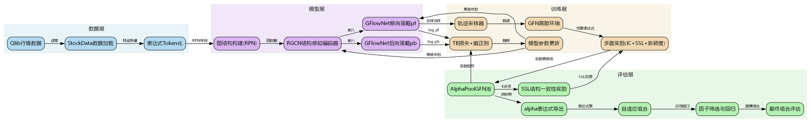
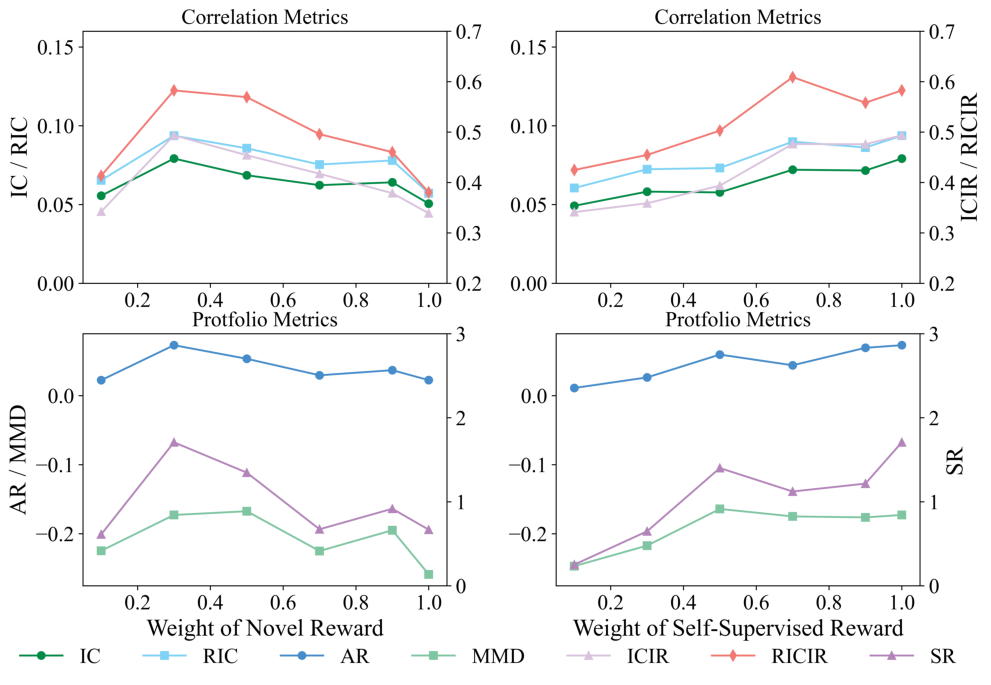
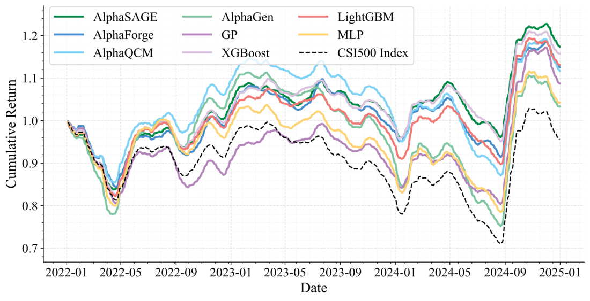
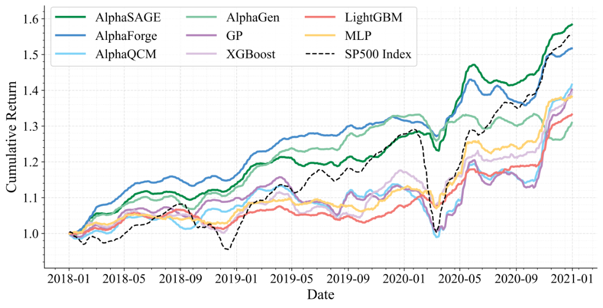
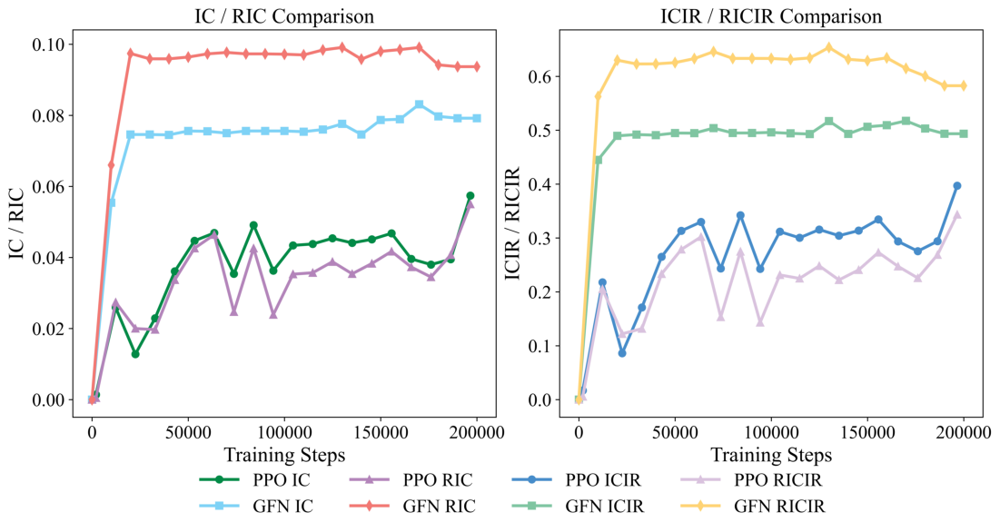
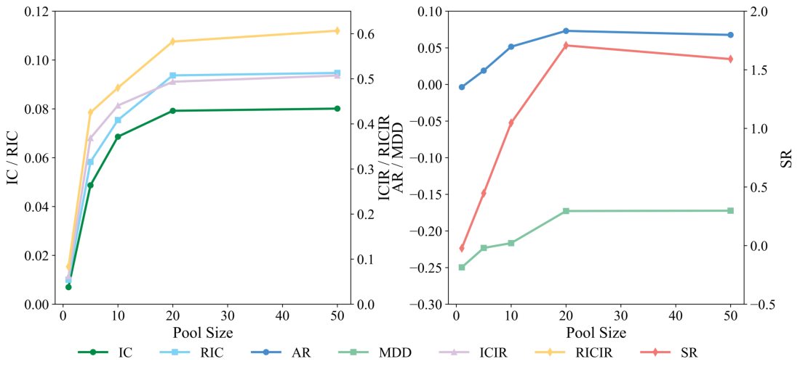
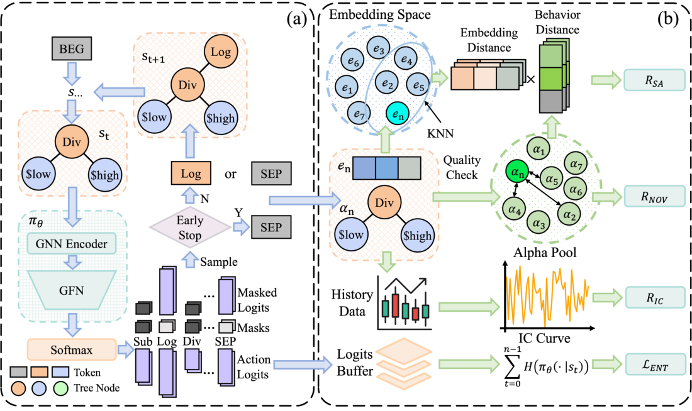
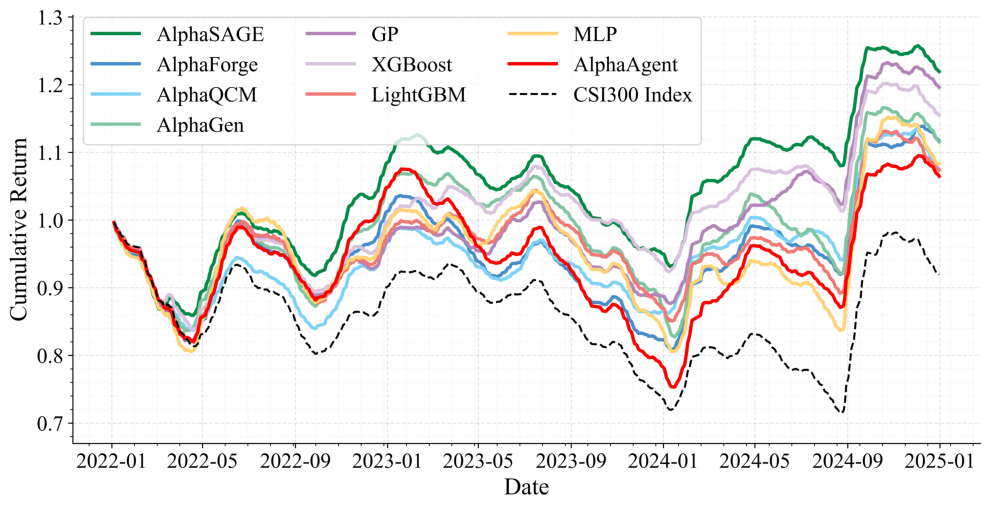
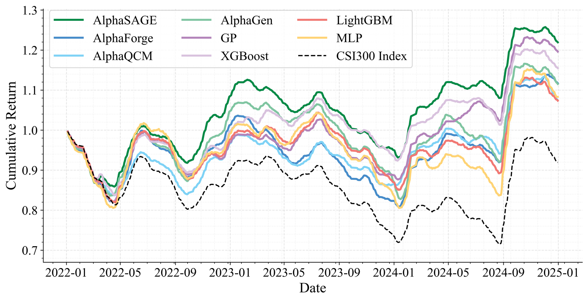
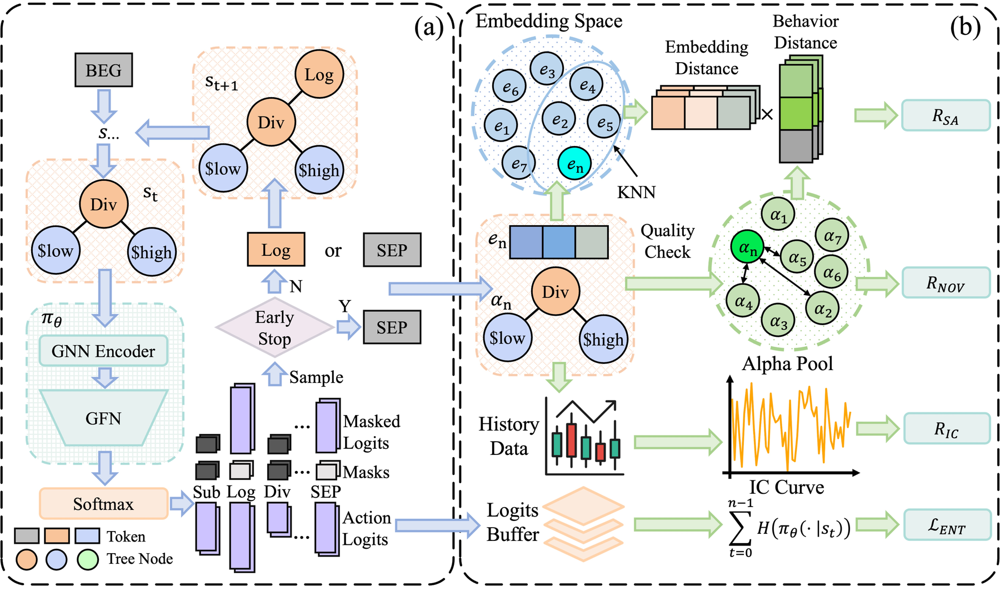

由 RepoGuide 自动生成于 2026-06-25 20:27
仓库路径：E:\KimiClaw\RepoGuide\_repoguide\repo
分析档位：deep 生成耗时：约 5 分钟
一句话总括：AlphaSAGE 是基于 GFlowNet 与 RGCN 的量化 alpha 自动挖掘框架，以结构感知编码器（RGCN 作用于 AST）和稠密多维奖励（IC+SA+NOV 时间退火）替代传统 RL，挖掘多样、新颖且高预测力的 alpha 组合，并提供动态线性组合（Mega-Alpha）落地。
| 项 | 值 |
|---|---|
| 主语言 | python |
| 文件总数 | 102 |
| 论文 | 已配套 |
| 核心入口 | train_AFF.py, train_gfn.py, train_GP.py, train_ppo.py, train_qcm.py, run_adaptive_combination.py |
# 安装（PDM 管理依赖）
git clone https://github.com/BerkinChen/AlphaSAGE.git && cd AlphaSAGE && pdm install
# 训练 GFlowNet 挖掘 alpha 池
python train_gfn.py --seed 0 --instrument csi300 --pool_capacity 50 --n_episodes 10000 \
--encoder_type gnn --ssl_weight 1.0 --nov_weight 0.3
# 评估与动态组合（生成 Mega-Alpha）
python run_adaptive_combination.py --expressions_file results_dir --instruments csi300 \
--threshold_ric 0.015 --threshold_ricir 0.15 --n_factors 20 --train_end_year 2020| # | 文件 | 用途 |
|---|---|---|
| 1 | train_gfn.py |
GFlowNet 训练主入口，含主循环、退火调度、池更新 |
| 2 | run_adaptive_combination.py |
alpha 池动态线性组合，生成 Mega-Alpha 并回测 |
| 3 | src/alpha_gfn/gflownet.py |
GFlowNet 策略与前向采样、TB 损失实现 |
| 4 | src/alpha_gfn/modules.py |
RGCN 结构感知编码器与策略网络 |
| 5 | src/alpha_gfn/alpha_pool.py |
alpha 池管理、IC/SA/NOV 奖励计算 |
pyproject.toml| 包 | 用途 |
|---|---|
| torch | GFlowNet/RGCN 神经网络主体 |
| torch-geometric | RGCNConv 消息传递与图池化 |
| numpy | 数值计算与 IC 相关性 |
| 包 | 用途 |
|---|---|
| qlib | 微软开源量化平台，提供 CSI300/500/1000 与 S&P500 数据 |
| pandas | 时序面板数据处理 |
| 包 | 用途 |
|---|---|
| einops | 张量重排 |
| tqdm | 进度条 |
| scikit-learn | 线性回归（动态组合） |

图 1：分层架构与数据流转总览（graphviz 自动生成，按层着色）。左→右依次为：数据与配置层 → 核心模型层（GFlowNet+RGCN+奖励）→ 训练与组合层 → 评估输出层。
每一行末尾 # 后为该文件/目录的中文用途说明。deep 模式。
AlphaSAGE/ # 基于GFlowNet的量化alpha因子挖掘框架根目录
├── README.md # 项目说明文档与快速启动指南
├── LICENSE # MIT开源许可证
├── pyproject.toml # PDM项目配置与依赖声明
├── pdm.lock # PDM依赖版本锁定文件
├── .gitignore # Git忽略规则配置
├── train_gfn.py # 主训练入口:GFlowNet+RGCN生成alpha池
├── train_AFF.py # AlphaForge风格GAN基线训练脚本
├── train_GP.py # 遗传编程基线训练脚本
├── train_ppo.py # AlphaGen PPO强化学习基线训练脚本
├── train_qcm.py # AlphaQCM分布式RL基线训练脚本
├── run_adaptive_combination.py # 自适应组合评估第二阶段脚本
├── combine_AFF.py # AlphaForge结果组合与评估脚本
├── exp_AFF_calc_result.ipynb # AlphaForge实验结果分析笔记本
├── exp_GP_calc_result.ipynb # 遗传编程实验结果分析笔记本
├── exp_ML_train_and_result.ipynb # 机器学习基线训练结果笔记本
├── exp_RL_calc_result.ipynb # 强化学习实验结果分析笔记本
├── config/ # 配置文件目录
│ └── qcm_config/ # AlphaQCM模型超参配置
│ ├── fqf.yaml # FQF模型超参配置
│ ├── iqn.yaml # IQN模型超参配置
│ └── qrdqn.yaml # QRDQN模型超参配置
├── img/ # 论文图片资源目录
│ ├── overview.png # 框架总览图
│ └── backtest.png # 回测结果图
└── src/ # 源代码主目录
├── alpha_gfn/ # AlphaSAGE核心:GFlowNet生成模块
│ ├── __init__.py # 模块初始化导出config/env/alpha_pool
│ ├── config.py # GFN超参:算子/特征/常数/时间窗口
│ ├── gflownet.py # 熵正则化轨迹平衡GFlowNet损失
│ ├── modules.py # 序列编码器(LSTM/Transformer/RGCN)
│ ├── alpha_pool.py # alpha池:SSL奖励/新颖度/k近邻
│ ├── preprocessors.py # 整数状态预处理器
│ └── env/ # GFlowNet离散环境
│ ├── __init__.py # 环境模块初始化
│ └── core.py # GFNEnvCore:alpha表达式生成环境
├── alphagen/ # 基础alpha生成框架(源自AlphaGen)
│ ├── config.py # 基础配置:算子/特征/动作空间
│ ├── data/ # 表达式与数据计算
│ │ ├── calculator.py # alpha计算器
│ │ ├── expression.py # 表达式定义与运算符
│ │ ├── tokens.py # token定义(BEG/SEP/算子等)
│ │ └── tree.py # 表达式树构建与校验
│ ├── models/ # alpha池模型
│ │ ├── alpha_pool.py # AlphaPool基础池实现
│ │ └── model.py # 模型定义
│ ├── rl/ # 强化学习模块
│ │ ├── env/ # RL环境
│ │ │ ├── core.py # AlphaEnvCore基础环境
│ │ │ └── wrapper.py # AlphaEnv封装与action2token
│ │ └── policy.py # LSTMSharedNet PPO策略网络
│ ├── trade/ # 交易策略
│ │ ├── base.py # 策略基类
│ │ └── strategy.py # 交易策略实现
│ └── utils/ # 工具函数
│ ├── __init__.py # 工具模块初始化
│ ├── correlation.py # 批量IC/RankIC/收益计算
│ ├── pytorch_utils.py # 掩码均值方差等张量工具
│ └── random.py # 随机种子重置工具
├── alphagen_qlib/ # Qlib数据集成模块
│ ├── stock_data.py # StockData与FeatureType定义
│ ├── calculator.py # QLib股票数据计算器
│ ├── strategy.py # Qlib回测策略
│ └── utils.py # Qlib工具函数
├── alphagen_generic/ # 通用特征与算子
│ ├── features.py # 标准特征别名与target定义
│ └── operators.py # 通用算子函数集
├── fqf_iqn_qrdqn/ # 分布式RL(AlphaQCM基线)
│ ├── __init__.py # 模块初始化
│ ├── env.py # QCM训练环境
│ ├── network.py # QCM网络结构
│ ├── utils.py # QCM工具函数
│ ├── agent/ # RL智能体
│ │ ├── __init__.py # 智能体模块导出
│ │ ├── base_agent.py # 智能体基类
│ │ ├── fqf_agent.py # FQF智能体
│ │ ├── iqn_agent.py # IQN智能体
│ │ ├── qrdqn_agent.py # QRDQN智能体
│ │ ├── fqcm_agent.py # FQCM智能体
│ │ ├── iqcm_agent.py # IQCM智能体
│ │ └── qrqcm_agent.py # QRQCM智能体
│ ├── memory/ # 经验回放
│ │ ├── __init__.py # 回放模块导出
│ │ ├── base.py # 基础回放缓冲区
│ │ ├── per.py # 优先经验回放
│ │ └── segment_tree.py # 线段树实现
│ └── model/ # 分布式RL模型
│ ├── __init__.py # 模型导出
│ ├── base_model.py # 模型基类
│ ├── fqf.py # FQF分位数网络
│ ├── iqn.py # IQN隐式分位数网络
│ ├── qrdqn.py # QRDQN分位数回归网络
│ ├── alpha_fqf.py # alpha专用FQF
│ ├── alpha_iqn.py # alpha专用IQN
│ ├── alpha_qrdqn.py # alpha专用QRDQN
│ └── mean.py # 均值聚合网络
├── gan/ # GAN生成网络(AlphaForge基线)
│ ├── __init__.py # GAN模块初始化
│ ├── dataset/ # 数据集
│ │ ├── __init__.py # 数据集模块导出
│ │ └── collector.py # 构建器token采集器
│ ├── network/ # 网络组件
│ │ ├── __init__.py # 网络模块导出
│ │ ├── generater.py # 生成器网络训练
│ │ ├── predictor.py # 预测器与回归模型
│ │ ├── masker.py # 掩码网络NetM
│ │ └── loss.py # GAN损失函数
│ └── utils/ # GAN工具
│ ├── __init__.py # 工具模块导出
│ ├── builder.py # 表达式构建器与张量转换
│ ├── data.py # 按年切分数据
│ ├── pool.py # alpha池工具
│ └── qlib.py # Qlib集成工具
├── gplearn/ # 遗传编程库(gplearn分支)
│ ├── __init__.py # 模块初始化与版本声明
│ ├── _program.py # GP程序树个体表示
│ ├── fitness.py # 适应度函数构造
│ ├── functions.py # 函数集构造
│ ├── genetic.py # SymbolicRegressor符号回归
│ ├── utils.py # GP工具函数
│ └── tests/ # 单元测试
│ ├── __init__.py # 测试模块初始化
│ ├── test_estimator_checks.py # 估计器检查测试
│ ├── test_examples.py # 示例测试
│ ├── test_fitness.py # 适应度测试
│ ├── test_functions.py # 函数集测试
│ ├── test_genetic.py # 遗传算法测试
│ └── test_utils.py # 工具函数测试
└── data_collection/ # 数据采集与转换
├── fetch_baostock_data.py # baostock行情数据下载
└── qlib_dump_bin.py # 转换为Qlib二进制格式首先，train_gfn.py与run_adaptive_combination.py通过StockData从Qlib读取csi300或sp500行情，构造开高低收量及VWAP特征张量，并以Ref(close,-20)/close-1作为20日收益target。训练阶段，GFlowNet前向策略pf基于RGCN编码器输出的图嵌入逐token采样动作，环境GFNEnvCore按逆波兰(RPN)序列追加token并依据ExpressionBuilder校验合法性。当生成SEP终止token后，AlphaPoolGFN计算该表达式的IC收益奖励、与池内因子的互相关新颖度奖励，以及基于嵌入k近邻的SSL结构一致性奖励，三者加权形成稠密奖励信号。该奖励通过轨迹平衡(TB)损失配合熵正则项，驱动前向/后向策略与RGCN编码器的联合更新，WeightScheduler在训练过程中按线性/指数/多项式退火衰减SSL与新颖度权重。训练产出的alpha池以JSON checkpoint保存，进入第二阶段run_adaptive_combination.py按滚动窗口筛选RIC与RICIR达标的因子，并用最小二乘回归融合为单一预测。最终在验证集与测试集上计算IC、ICIR、Sharpe与最大回撤等指标，完成从因子挖掘到组合评估的闭环。
| 步骤 | 输入 | 处理模块 | 输出 | 关键文件 |
|---|---|---|---|---|
| 1 | Qlib行情数据(开高低收量VWAP) | 数据加载 | 特征张量与20日收益target | src/alphagen_qlib/stock_data.py |
| 2 | 表达式token序列(RPN) | RGCN结构感知编码器 | 图嵌入向量 | src/alpha_gfn/modules.py |
| 3 | 图嵌入 | GFlowNet前向/后向策略 | alpha表达式token序列 | src/alpha_gfn/gflownet.py |
| 4 | 完整alpha表达式+嵌入 | GFN环境与多面奖励 | IC+SSL+新颖度奖励 | src/alpha_gfn/env/core.py |
| 5 | 表达式与奖励 | AlphaPoolGFN池 | 去相关候选alpha集合 | src/alpha_gfn/alpha_pool.py |
| 6 | alpha池JSON快照 | 自适应组合与回归融合 | 最终组合预测与评估指标 | run_adaptive_combination.py |
train_gfn.py:272）train_gfn.py:230）train_gfn.py:216）src/alpha_gfn/env/core.py:140）src/alpha_gfn/env/core.py:86）src/alpha_gfn/gflownet.py:81）src/alpha_gfn/alpha_pool.py:28）src/alpha_gfn/alpha_pool.py:220）run_adaptive_combination.py:382）run_adaptive_combination.py:218）src/alpha_gfn/gflownet.py实现EntropyTBGFlowNet继承自TBGFlowNet；train_gfn.py使用gfn库的Sampler与DiscretePolicyEstimator构建pf/pb双策略头src/alpha_gfn/modules.py的GNNEncoder使用RGCNConv，_build_graph_from_rpn按算子类型定义6种关系边(单目/交换/左/右/特征/时序)，并支持lstm/transformer/gnn三种encoder_type对比env/core.py的reward()返回ic_reward+ssl_weight*ssl_reward+nov_weight*nov_reward；alpha_pool.py分别实现try_new_expr的互相关新颖度与compute_ssl_reward的k近邻一致性env/core.py update_masks中length_based_dropout_prob=mask_dropout_prob*(expr_length/MAX_EXPR_LENGTH)，对已达合法长度的表达式按概率屏蔽所有非终止动作train_gfn.py的WeightScheduler借助PyTorch的LinearLR/ExponentialLR/PolynomialLR将辅助权重从初值衰减至final_weight_ratio倍，每episode调用step并更新env权重每个核心文件一张卡片：标题带一句话职责 → 类清单（行内）→ 函数签名+职责+参数+关键逻辑。key_logic 超 8 行自动截断。
train_gfn.py — AlphaSAGE GFlowNet 主训练入口，使用结构感知 RGCN 编码器 + 熵正则 TB 损失训练因子表达式生成器，并维护带 SSL 自监督奖励的因子池依赖：torch,gfn,tensorboard,src.alpha_gfn,src.alphagen_qlib,src.alphagen_generic
类：GFNLogger (L18) 核心类；WeightScheduler (L33) 核心类
函数：
main()if __name__ == '__main__':
args = parse_args()
train(args)log_rewards(self, logs)logs 包含训练统计的日志字典def log_rewards(self, logs):
super().log_rewards(logs)
self.logger.info('reward: ' + str(logs['reward']))
self.writer.add_scalar('train/reward', logs['reward'], self._step)__init__(self, weight_decay_type, initial_weight, final_weight_ratio, total_steps)weight_decay_type 衰减类型：linear/exponential/polynomial；initial_weight 初始权重值；final_weight_ratio 最终权重相对初始权重的比例；total_steps 总训练步数self.weight_decay_type = weight_decay_type
self.initial_weight = initial_weight
self.final_weight = final_weight_ratio * initial_weight
self.total_steps = total_stepsget_weight(self, step)step 当前训练步数if self.weight_decay_type == 'linear':
ratio = 1.0 - step / self.total_steps
elif self.weight_decay_type == 'exponential':
ratio = math.exp(-step / self.total_steps)
return self.final_weight + (self.initial_weight - self.final_weight) * ratiotrain(args)args 命令行参数对象，含 instrument、pool_capacity、encoder_type 等data = StockData(args.instrument, ...)
calculator = QLibStockDataCalculator(data, target)
pool = AlphaPoolGFN(args.pool_capacity, calculator, target)
state = pool.state
encoder = SequenceEncoder(...)
gflownet = EntropyTBGFlowNet(...)
trainer = FlatTrajectoryTB(...)
trainer.train()train_ppo.py — AlphaGen PPO 基线训练入口，使用 MaskablePPO + LSTM/Transformer 策略网络在 AlphaEnv 中生成因子并维护因子池依赖：stable_baselines3,sb3_contrib,src.alphagen.models,src.alphagen.rl.env,src.alphagen_qlib
类：CustomCallback (L14) 核心类
函数：
main()if __name__ == '__main__':
args = parse_args()
run(args)_on_step(self)if self.n_calls % self.freq == 0:
self.pool.save(os.path.join(save_dir, 'pool.json'))
self.model.save(os.path.join(save_dir, 'model.zip'))
return Truerun(args)args 命令行参数对象，含 instruments、pool、seed 等data = StockData(args.instruments, ...)
calculator = QLibStockDataCalculator(data, target)
pool = AlphaPool(args.pool, calculator)
env = AlphaEnv(pool)
model = MaskablePPO(LSTMSharedNet, env, ...)
model.learn(total_timesteps=args.n_steps, callback=CustomCallback(pool, args.save_dir))train_qcm.py — AlphaQCM 基线训练入口，按 yaml 配置创建 QRDQN/IQN/FQF + QCM 高阶矩（std/skewness/kurtosis）分位数强化学习 agent依赖：yaml,src.fqf_iqn_qrdqn.agent,src.alphagen.models,src.alphagen.rl.env,src.alphagen_qlib
函数：
main()if __name__ == '__main__':
args = parse_args()
run(args)load_yaml(path)path yaml 配置文件路径with open(path, 'r') as f:
cfg = yaml.safe_load(f)
return cfgrun(args)args 命令行参数对象，含 instruments、pool、algo、seed 等cfg = load_yaml(f'config/qcm_config/{args.algo}.yaml')
agent_cls = {'qrdqn': QRQCMAgent, 'iqn': IQCMAgent, 'fqf': FQCMAgent}[args.algo]
agent = agent_cls(env, data_valid, data_test, target, log_dir, **cfg)
agent.run()train_AFF.py — GAN 因子挖掘训练入口，训练 DCGAN/LSTM 生成器 + Masker 掩码器 + Predictor 评分器，循环生成并评估因子 zoo依赖：torch,src.gan.network,src.gan.utils,src.gan.dataset,src.alphagen_qlib
函数：
main()if __name__ == '__main__':
args = parse_args()
run(args)pre_process_y(y)y 原始目标收益率张量y = y.flatten()
mask = torch.isfinite(y)
return y[mask], masknumpy2onehot(arr, n_classes)arr 整数数组；n_classes 类别数onehot = np.zeros((len(arr), n_classes))
for i, a in enumerate(arr):
onehot[i, a] = 1
return torch.from_numpy(onehot)blds_list_to_tensor(blds_list)blds_list Builders 对象列表tensors = [numpy2onehot(b.to_numpy(), n_chars) for b in blds_list]
return torch.stack(tensors)get_metric(data, target, threshold_ic, threshold_icir, mode)data StockData 对象；target 目标表达式；threshold_ic IC 阈值；threshold_icir ICIR 阈值；mode 评估模式def metric(expr):
ic, icir = calc_single_IC_ret(expr, data, target)
if abs(ic) < threshold_ic or abs(icir) < threshold_icir:
return 0
return ic
return metrictrain_net_p_with_weight(cfg, net, x, y, weights, lr=0.001)cfg 配置对象；net NetP 预测网络；x 输入特征；y 目标值；weights 样本权重；lr 学习率loss_fn = lambda i,t,w: ((i-t)**2 * w).mean()
optimizer = torch.optim.Adam(net.parameters(), lr=lr)
train_regression_model_with_weight(...)run(args)args 命令行参数对象，含 instruments、num_rounds、n_samples 等for round_idx in range(args.num_rounds):
blds = train_network_generator(netG, netM, netP, cfg, data, target, round_idx, ...)
blds.evaluate(data, target, metric)
zooblds = zooblds + blds
train_net_p_with_weight(cfg, netP, ...)train_GP.py — GP 符号回归训练入口，使用 gplearn SymbolicRegressor + 自定义 IC 适应度函数，遗传搜索因子表达式并维护因子池依赖：src.gplearn,src.alphagen.models,src.alphagen_generic,src.alphagen_qlib
函数：
main()if __name__ == '__main__':
args = parse_args()
run(args)_metric(expr_str, data, target, cache)expr_str 表达式字符串；data StockData 对象；target 目标表达式；cache IC 缓存字典if expr_str in cache:
return cache[expr_str]
expr = ExpressionParser().parse(expr_str)
ic = calc_single_IC_ret(expr, data, target)[0]
cache[expr_str] = ic
return ictry_single(expr, data, target, pool)expr 表达式对象；data StockData 对象；target 目标表达式；pool AlphaPool 对象inc = pool.test_new_expr(expr)
if inc > 0:
pool.try_new_expr(expr)
return inctry_pool(exprs, data, target, pool)exprs 表达式列表；data StockData 对象；target 目标表达式；pool AlphaPool 对象count = 0
for expr in exprs:
if try_single(expr, data, target, pool) > 0:
count += 1
return countev(program, data, target, pool, cache)program _Program 对象；data StockData 对象；target 目标表达式；pool AlphaPool 对象；cache IC 缓存字典expr_str = str(program)
ic = _metric(expr_str, data, target, cache)
try_single(ExpressionParser().parse(expr_str), data, target, pool)
return icrun(args)args 命令行参数对象，含 instruments、population_size、generations 等est = SymbolicRegressor(population_size=args.population_size, generations=args.generations,
function_set=generic_funcs, metric=make_metric(...),
p_crossover=0.7, p_subtree_mutation=0.1)
est.fit(X, y, callback=ev)run_adaptive_combination.py — 因子自适应线性组合评估入口，使用滚动窗口选因子 + 最小二乘回归预测，含多重共线性过滤（VIF/SVD/QR）依赖：numpy,scipy,torch,src.alphagen_qlib,src.alphagen.utils.correlation
函数：
main()if __name__ == '__main__':
args = parse_args()
run(args)remove_linearly_dependent_rows(matrix, threshold=1e-8)matrix 输入矩阵；threshold 线性相关判定阈值U, s, Vh = np.linalg.svd(matrix)
rank = np.sum(s > threshold)
return matrix[:rank], list(range(rank))remove_linearly_dependent_cols(matrix, threshold=1e-8)matrix 输入矩阵；threshold 线性相关判定阈值Q, R, P = scipy.linalg.qr(matrix, pivoting=True)
rank = np.sum(np.abs(np.diag(R)) > threshold)
return matrix[:, P[:rank]], P[:rank].tolist()calculate_vif(X)X 设计矩阵vif = []
for i in range(X.shape[1]):
r2 = np.linalg.lstsq(...)[1]
vif.append(1.0 / (1.0 - r2))
return np.array(vif)remove_multicollinearity_vif(X, threshold=10.0)X 设计矩阵；threshold VIF 阈值while True:
vif = calculate_vif(X)
if vif.max() < threshold:
break
X = np.delete(X, vif.argmax(), axis=1)
return X, keep_colsload_alpha_pool_by_path(path)path pool.json 文件路径with open(path) as f:
raw = json.load(f)
exprs = [eval(s.replace('$open','open_').replace('$','')) for s in raw['exprs']]
return exprs, raw['weights']get_tensor_metrics(pred, target)pred 预测值张量；target 目标值张量ic = batch_pearsonr(pred, target).mean()
ret = batch_ret(pred, target)
sharpe = batch_sharpe_ratio(ret)
mdd = batch_max_drawdown(ret)
return {'IC': ic, 'Sharpe': sharpe, 'MDD': mdd}run(args)args 命令行参数对象，含 expressions_file、instruments、window、n_factors 等exprs, weights = load_alpha_pool_by_path(args.expressions_file)
for window in windows:
X = build_factor_matrix(exprs, train_data)
X, _ = remove_multicollinearity_vif(X)
coef = np.linalg.lstsq(X, y)[0]
pred = X_test @ coefcombine_AFF.py — AFF 因子简化组合入口，与 run_adaptive_combination 类似但更精简，输出 pred_valid/pred .pt 文件依赖：torch,src.alphagen_qlib,src.alphagen.utils.correlation
函数：
main()if __name__ == '__main__':
args = parse_args()
run(args)run(args)args 命令行参数对象，含 expressions_file、instruments、cuda 等exprs, _ = load_alpha_pool_by_path(args.expressions_file)
X_train = build_factor_matrix(exprs, data)
coef = torch.linalg.lstsq(X_train, y_train)[0]
torch.save(pred_valid, 'pred_valid.pt')src/alpha_gfn/gflownet.py — AlphaSAGE 核心：带熵正则化的 Trajectory Balance GFlowNet，覆写轨迹评分以引入 entropy_term 促进探索多样性依赖：torch,gfn
类：EntropyTBGFlowNet (L10) 核心类
函数：
__init__(self, entropy_coef, entropy_temperature, **kwargs)entropy_coef 熵正则项系数；entropy_temperature 熵计算温度系数super().__init__(**kwargs)
self.entropy_coef = entropy_coef
self.entropy_temperature = entropy_temperatureget_trajectories_scores(self, trajectories)trajectories GFlowNet 轨迹对象列表scores, logZ = super().get_trajectories_scores(trajectories)
log_probs = self.log_prob(trajectories)
entropy_term = -log_probs.sum(dim=-1) / self.entropy_temperature
return scores, logZ, entropy_termloss(self, env, trajectories)env GFlowNet 环境；trajectories 轨迹对象scores, logZ, entropy = self.get_trajectories_scores(trajectories)
return (scores + logZ).pow(2).mean() - self.entropy_coef * entropy.mean()src/alpha_gfn/alpha_pool.py — AlphaSAGE 核心：AlphaPoolGFN，在 AlphaPool 基础上引入 SSL 自监督一致性奖励与 novelty 奖励，通过 k 近邻计算因子嵌入相似度依赖：torch,torch.nn.functional,src.alphagen.models.alpha_pool
类：AlphaPoolGFN (L18) 核心类
函数：
__init__(self, capacity, calculator, target, ssl_weight, nov_weight, device)capacity 因子池最大容量；calculator AlphaCalculator 对象；target 目标表达式；ssl_weight SSL 奖励权重；nov_weight novelty 奖励权重；device 计算设备super().__init__(capacity, calculator, target)
self.ssl_weight = ssl_weight
self.nov_weight = nov_weight
self.device = devicetry_new_expr_with_ssl(self, expr, embedding)expr 表达式对象；embedding 表达式嵌入张量ic_inc = self.test_new_expr(expr)
ssl = self.compute_ssl_reward(embedding)
nov = self.compute_novelty(embedding)
return ic_inc + self.ssl_weight * ssl + self.nov_weight * novcompute_ssl_reward(self, embedding)embedding 新表达式嵌入idx, sims = self._find_k_nearest_neighbors(embedding)
weights = self._compute_similarity_weights(sims)
loss = self._compute_consistency_loss(embedding, idx, weights)
return torch.exp(-loss)_find_k_nearest_neighbors(self, embedding, k=5)embedding 查询嵌入；k 近邻数量sims = F.cosine_similarity(embedding, self.pool_embeddings)
vals, idx = sims.topk(k)
return idx, vals_compute_similarity_weights(self, similarities)similarities 相似度张量return F.softmax(similarities / self.temperature, dim=-1)_compute_consistency_loss(self, embedding, idx, weights)embedding 新嵌入；idx 近邻索引；weights 近邻权重neighbors = self.pool_embeddings[idx]
target = (weights[...,None] * neighbors).sum(0)
return F.mse_loss(embedding, target)debug_embedding_similarities(self, embedding)embedding 查询嵌入sims = F.cosine_similarity(embedding, self.pool_embeddings)
print('similarity stats:', sims.mean(), sims.max(), sims.min())
return simssrc/alpha_gfn/modules.py — AlphaSAGE 结构感知编码器：RPN→RGCN 图构建 + PositionalEncoding + GNNEncoder(RGCNConv) + SequenceEncoder（支持 transformer/lstm/gnn）依赖：torch,torch_geometric.nn,src.alpha_gfn.config
类：PositionalEncoding (L60) 核心类；GNNEncoder (L75) 核心类；SequenceEncoder (L100) 核心类
函数：
_build_graph_from_rpn(tokens, n_features, n_operators)tokens RPN token 列表；n_features 特征数；n_operators 算子数edges = []
stack = []
for t in tokens:
if is_operator(t):
a, b = stack.pop(), stack.pop()
edges += [(b,t,'in1'),(a,t,'in2'),(t,b,'out')]
stack.append(t)
return Data(x=node_features, edge_index=edge_idx, edge_type=edge_type)forward(self, x)x 输入序列张量 (seq_len, batch, d_model)return x + self.pe[:x.size(0)]forward(self, data)data PyG Data 图对象x, edge_index, edge_type = data.x, data.edge_index, data.edge_type
for conv in self.convs:
x = conv(x, edge_index, edge_type)
x = F.relu(x)
return x__init__(self, encoder_type, n_features, n_operators, hidden_dim, n_layers, n_heads, dropout)encoder_type 编码器类型：gnn/lstm/transformer；n_features 特征数；n_operators 算子数；hidden_dim 隐藏维度；n_layers 层数；n_heads 注意力头数；dropout dropout 概率if encoder_type == 'gnn':
self.encoder = GNNEncoder(...)
elif encoder_type == 'lstm':
self.encoder = nn.LSTM(hidden_dim, hidden_dim, n_layers, batch_first=True)
elif encoder_type == 'transformer':
layer = nn.TransformerEncoderLayer(hidden_dim, n_heads, ...)
self.encoder = nn.TransformerEncoder(layer, n_layers)src/alpha_gfn/env/core.py — AlphaSAGE GFlowNet 环境核心：GFNEnvCore(DiscreteEnv)，实现 step/backward_step/update_masks（含 length-based mask dropout）/reward（IC+SSL+novelty）依赖：torch,gfn.env,src.alphagen.data.tree,src.alpha_gfn.alpha_pool,src.alpha_gfn.config
类：GFNEnvCore (L15) 核心类
函数：
step(self, action)action token 动作索引self.tokens.append(action)
self.update_masks()
done = len(self.tokens) >= MAX_EXPR_LENGTH or action == SEP_TOKEN
reward = self.reward() if done else 0
return self.state, reward, done, {}backward_step(self, action)action 要撤销的 token 索引self.tokens.pop()
self.update_masks()
return self.stateupdate_masks(self)mask = self._valid_action_types()
if random.random() < self.mask_dropout_prob:
mask = self._apply_mask_dropout(mask)
self.masks = maskreward(self)expr = ExpressionBuilder().build(self.tokens)
return self.pool.try_new_expr_with_ssl(expr, self.last_embedding)src/alpha_gfn/config.py — AlphaSAGE GFlowNet 任务超参数配置：MAX_EXPR_LENGTH=20、HIDDEN_DIM=128、OPERATORS/FEATURES/DELTA_TIMES/CONSTANTS 列表依赖：src.alphagen.data.expression,src.alphagen_qlib.stock_data
src/alpha_gfn/preprocessors.py — GFlowNet 整数预处理器：IntegerPreprocessor 将 token 索引归一化为网络输入格式依赖：torch,torch.nn.functional
类：IntegerPreprocessor (L5) 核心类
函数：
forward(self, x)x 整数 token 张量return F.one_hot(x, self.n_classes).float()src/alphagen/data/expression.py — 表达式体系核心：Expression ABC + Feature/Constant/DeltaTime + Operator(Unary/Binary/Rolling/PairRolling) + 所有算子实现（Abs/Add/Ref/TsMean/TsCorr 等）+ Operators 列表依赖：torch,abc
类：Expression (L8) 核心类；Feature (L30) 核心类；Constant (L45) 核心类；DeltaTime (L60) 核心类；Operator (L75) 核心类（等共 20 个类）
函数：
evaluate(self, calculator: AlphaCalculator) -> Tensorcalculator AlphaCalculator 对象raise NotImplementedErrorevaluate(self, calculator)calculator AlphaCalculator 对象return calculator.calc_feature(self.feature)evaluate(self, calculator)calculator AlphaCalculator 对象return torch.full(calculator.shape, self.value)evaluate(self, calculator)calculator AlphaCalculator 对象a = self.operand.evaluate(calculator)
return self._apply(a)evaluate(self, calculator)calculator AlphaCalculator 对象a = self.lhs.evaluate(calculator)
b = self.rhs.evaluate(calculator)
return self._apply(a, b)evaluate(self, calculator)calculator AlphaCalculator 对象a = self.operand.evaluate(calculator)
return self._apply(a, self.delta_time.value)src/alphagen/data/tokens.py — Token 体系：将 Feature/Constant/DeltaTime/Operator 映射为离散 token，定义 BEG_TOKEN/SEP_TOKEN 边界标记依赖：src.alphagen.data.expression
类：Token (L8) 核心类；FeatureToken (L25) 核心类；ConstantToken (L40) 核心类；OperatorToken (L55) 核心类；DeltaTimeToken (L70) 核心类（等共 7 个类）
函数：
from_expr(expr, tokenizer)expr 表达式元素；tokenizer Tokenizer 对象if isinstance(expr, Feature):
return FeatureToken(expr.feature, tokenizer.feature_idx(expr.feature))
elif isinstance(expr, Constant):
return ConstantToken(expr.value, tokenizer.const_idx(expr.value))src/alphagen/data/tree.py — 表达式构建与解析：ExpressionBuilder（RPN 栈式构建）+ ExpressionParser（字符串→Expression）+ InvalidExpressionException依赖：src.alphagen.data.expression,src.alphagen.data.tokens
类：InvalidExpressionException (L5) 核心类；ExpressionBuilder (L12) 核心类；ExpressionParser (L80) 核心类
函数：
__init__(self)self.stack = []
self.tokens = []push(self, token)token Token 对象self.tokens.append(token)
if token.is_operator():
args = [self.stack.pop() for _ in range(token.arity)]
self.stack.append(token.create_expr(*reversed(args)))
else:
self.stack.append(token.create_expr())build(self)if len(self.stack) != 1:
raise InvalidExpressionException()
return self.stack[0]parse(self, s)s 表达式字符串self.tokens = self._tokenize(s)
self.pos = 0
return self._parse_expr()src/alphagen/data/calculator.py — AlphaCalculator 抽象基类：定义 calc_single_IC_ret/calc_pool_IC_ret 等因子评估接口，由 QLibStockDataCalculator 实现依赖：abc,torch
类：AlphaCalculator (L8) 核心类
函数：
calc_single_IC_ret(self, expr, target)expr 表达式；target 目标表达式raise NotImplementedErrorcalc_pool_IC_ret(self, exprs, weights, target)exprs 表达式列表；weights 权重列表；target 目标表达式raise NotImplementedErrorsrc/alphagen/models/alpha_pool.py — 因子池核心：AlphaPoolBase ABC、AlphaPool（try_new_expr/_optimize Adam 优化权重/test_ensemble/evaluate_ensemble）、AlphaPoolMinICConstrained、SingleAlphaPool依赖：torch,torch.nn,src.alphagen.data.calculator,src.alphagen_qlib.calculator
类：AlphaPoolBase (L10) 核心类；AlphaPool (L35) 核心类；AlphaPoolMinICConstrained (L120) 核心类；SingleAlphaPool (L160) 核心类
函数：
__init__(self, capacity, calculator, target, device)capacity 因子池最大容量；calculator AlphaCalculator 对象；target 目标表达式；device 计算设备self.capacity = capacity
self.calculator = calculator
self.target = target
self.exprs = []
self.weights = nn.Parameter(torch.zeros(capacity, device=device))try_new_expr(self, expr)expr 表达式对象inc = self.test_new_expr(expr)
if inc > 0:
self._add_expr(expr)
self._optimize()
return inc_optimize(self, n_epochs=100, lr=0.01)n_epochs 优化轮数；lr 学习率opt = torch.optim.Adam([self.weights], lr=lr)
for _ in range(n_epochs):
loss = -self._ensemble_ic()
opt.zero_grad(); loss.backward(); opt.step()test_ensemble(self)return self.calculator.calc_pool_IC_ret(self.exprs, self.weights, self.target)evaluate_ensemble(self, data, target)data StockData 对象；target 目标表达式calc = QLibStockDataCalculator(data, target)
return calc.calc_pool_IC_ret(self.exprs, self.weights, target)save(self, path)path 保存路径with open(path, 'w') as f:
json.dump({'exprs': [str(e) for e in self.exprs],
'weights': self.weights.tolist()}, f)src/alphagen/models/model.py — AlphaGen 表达式生成模型：TokenEmbedding + PositionalEncoding + ExpressionGenerator（Transformer encoder-decoder）依赖：torch,torch.nn
类：TokenEmbedding (L10) 核心类；PositionalEncoding (L25) 核心类；ExpressionGenerator (L40) 核心类
函数：
__init__(self, n_tokens, d_model=128, n_heads=4, d_ff=512, n_layers=2, dropout=0.1)n_tokens token 词表大小；d_model 模型维度；n_heads 注意力头数；d_ff 前馈维度；n_layers 层数；dropout dropout 概率self.embedding = TokenEmbedding(n_tokens, d_model)
self.pos = PositionalEncoding(d_model)
layer = nn.TransformerEncoderLayer(d_model, n_heads, d_ff, dropout)
self.encoder = nn.TransformerEncoder(layer, n_layers)forward(self, src, tgt)src 源 token 序列；tgt 目标 token 序列src = self.pos(self.embedding(src))
memory = self.encoder(src)
out = self.decoder(self.pos(self.embedding(tgt)), memory)
return self.fc(out)src/alphagen/rl/env/core.py — AlphaGen RL 环境核心：AlphaEnvCore(gym.Env) reset/step/_evaluate/_valid_action_types，逐步生成表达式 token依赖：gym,torch,src.alphagen.data.tree,src.alphagen.config
类：AlphaEnvCore (L15) 核心类
函数：
reset(self)self.tokens = [BEG_TOKEN]
self.builder = ExpressionBuilder()
return self._get_state()step(self, action)action token 动作索引self.tokens.append(action)
self.builder.push(token)
done = action == SEP_TOKEN or len(self.tokens) >= MAX_EPISODE_LENGTH
reward = self._evaluate() if done else REWARD_PER_STEP
return self._get_state(), reward, done, {}_evaluate(self)expr = self.builder.build()
return self.pool.test_new_expr(expr)_valid_action_types(self)stack_size = self.builder.stack_size
mask = torch.zeros(self.n_actions, dtype=bool)
for t in all_tokens:
if t.can_push(stack_size):
mask[t.idx] = True
return masksrc/alphagen/rl/env/wrapper.py — AlphaGen RL 环境包装器：action2token/token2action 转换 + AlphaEnvWrapper(gym.Wrapper) 提供 action_masks + AlphaEnv 工厂依赖：gym,src.alphagen.rl.env.core,src.alphagen.data.tokens
类：AlphaEnvWrapper (L25) 核心类
函数：
action2token(action, tokenizer)action 动作索引；tokenizer Tokenizer 对象return tokenizer.idx_to_token(action)token2action(token, tokenizer)token Token 对象；tokenizer Tokenizer 对象return tokenizer.token_to_idx(token)action_masks(self)return self.env._valid_action_types().cpu().numpy()AlphaEnv(pool, device)pool AlphaPool 对象；device 计算设备core = AlphaEnvCore(pool, device)
return AlphaEnvWrapper(core)src/alphagen/rl/policy.py — AlphaGen 策略网络：PositionalEncoding + TransformerSharedNet/LSTMSharedNet（sb3 BaseFeaturesExtractor）+ Decoder依赖：torch,torch.nn,stable_baselines3.common.torch_layers
类：TransformerSharedNet (L30) 核心类；LSTMSharedNet (L70) 核心类；Decoder (L110) 核心类
函数：
__init__(self, observation_space, n_tokens, d_model=128, n_heads=4, n_layers=2)observation_space gym 观测空间；n_tokens token 词表大小；d_model 模型维度；n_heads 注意力头数；n_layers 层数super().__init__(observation_space, d_model)
self.embedding = TokenEmbedding(n_tokens, d_model)
layer = nn.TransformerEncoderLayer(d_model, n_heads, ...)
self.encoder = nn.TransformerEncoder(layer, n_layers)forward(self, obs)obs 观测张量x = self.embedding(obs)
x = self.pos(x)
x = self.encoder(x)
return x.mean(dim=1)__init__(self, observation_space, n_tokens, d_model=128, n_layers=2)observation_space gym 观测空间；n_tokens token 词表大小；d_model 模型维度；n_layers LSTM 层数super().__init__(observation_space, d_model)
self.embedding = TokenEmbedding(n_tokens, d_model)
self.lstm = nn.LSTM(d_model, d_model, n_layers, batch_first=True)src/alphagen/utils/correlation.py — 批量评估指标：batch_pearsonr/batch_spearmanr/batch_ret/batch_sharpe_ratio/batch_max_drawdown/batch_ret_with_metrics + _mask_either_nan依赖：torch,math
函数：
batch_pearsonr(x, y)x 预测张量；y 目标张量x, y = _mask_either_nan(x, y)
return ((x-x.mean(0))*(y-y.mean(0))).sum(0) / (x.std(0)*y.std(0)*x.shape[0])batch_spearmanr(x, y)x 预测张量；y 目标张量return batch_pearsonr(x.argsort(0).argsort(0), y.argsort(0).argsort(0))batch_ret(pred, target)pred 预测张量；target 目标张量return (pred * target).sum(1) / pred.abs().sum(1)batch_sharpe_ratio(ret)ret 收益率张量return ret.mean() / ret.std() * math.sqrt(252)batch_max_drawdown(ret)ret 收益率张量cum = ret.cumsum(0)
running_max = cum.cummax(0)
drawdown = cum - running_max
return drawdown.min()_mask_either_nan(x, y)x 张量 x；y 张量 ymask = ~(torch.isnan(x).any(1) | torch.isnan(y).any(1))
return x[mask], y[mask]src/alphagen/utils/pytorch_utils.py — PyTorch 工具函数：masked_mean_std（掩码均值标准差）+ normalize_by_day（按日横截面归一化）依赖：torch
函数：
masked_mean_std(x, mask)x 输入张量；mask 布尔掩码x = x[mask]
return x.mean(), x.std()normalize_by_day(factor)factor 因子张量 (n_days, n_stocks)mean = factor.mean(dim=1, keepdim=True)
std = factor.std(dim=1, keepdim=True)
return (factor - mean) / (std + 1e-8)src/alphagen/utils/random.py — 随机种子工具：reseed_everything 设置 Python/random/numpy/torch 的全局随机种子依赖：random,numpy,torch
函数：
reseed_everything(seed, deterministic=False)seed 随机种子；deterministic 是否启用 cudnn 确定性模式random.seed(seed); np.random.seed(seed); torch.manual_seed(seed)
if deterministic:
torch.backends.cudnn.deterministic = Truesrc/alphagen/config.py — AlphaGen 全局配置：MAX_EXPR_LENGTH=20、MAX_EPISODE_LENGTH=256、FEATURES/OPERATORS/DELTA_TIMES/CONSTANTS/REWARD_PER_STEP依赖：src.alphagen.data.expression,src.alphagen_qlib.stock_data
src/alphagen_qlib/stock_data.py — Qlib 数据加载：FeatureType(IntEnum) + StockData（_init_qlib/_load_exprs/_get_data/make_dataframe/add_data）封装 Qlib 数据访问依赖：qlib,torch,pandas,numpy
类：FeatureType (L8) 核心类；StockData (L20) 核心类
函数：
__init__(self, instrument, start_time, end_time, max_future_days=0, freq='day', raw=False, qlib_path='')instrument 股票池名称；start_time 开始日期；end_time 结束日期；max_future_days 最大未来天数；freq 数据频率；raw 是否原始数据；qlib_path Qlib 数据路径self._init_qlib(qlib_path)
self.instrument = instrument
self.start_time = start_time
self.end_time = end_time
self._get_data()_init_qlib(self, qlib_path)qlib_path Qlib 数据路径qlib.init(provider_uri=qlib_path, region='cn')_load_exprs(self)df = D.features(self.stocks, self.fields, start=self.start_time, end=self.end_time)
return torch.from_numpy(df.values).float()_get_data(self)self.stocks = D.list_instruments(self.instrument, ...)
self.data = self._load_exprs()make_dataframe(self)return pd.DataFrame(self.data.numpy(), index=self.dates, columns=self.stocks)src/alphagen_qlib/calculator.py — QLibStockDataCalculator(AlphaCalculator)：实现 calc_single_IC_ret/calc_pool_IC_ret 等，使用 Qlib 数据计算因子 IC/ICIR依赖：src.alphagen.data.calculator,src.alphagen.utils.correlation,src.alphagen_qlib.stock_data
类：QLibStockDataCalculator (L10) 核心类
函数：
__init__(self, data, target)data StockData 对象；target 目标表达式self.data = data
self.target = targetcalc_single_IC_ret(self, expr, target=None)expr 表达式；target 目标表达式（可选）fct = expr.evaluate(self.data)
tgt = self.target.evaluate(self.data)
ic = batch_pearsonr(fct, tgt).mean()
icir = ic / batch_ret(fct, tgt).std()
return ic, icircalc_pool_IC_ret(self, exprs, weights, target=None)exprs 表达式列表；weights 权重列表；target 目标表达式（可选）combined = sum(w * e.evaluate(self.data) for w, e in zip(weights, exprs))
return self.calc_single_IC_ret(Constant(0).__class__(combined), target)src/fqf_iqn_qrdqn/agent/base_agent.py — 分位数 RL agent 基类：BaseAgent ABC（run/train_episode/explore/exploit/evaluate/save_models/save_exprs）依赖：torch,abc,src.fqf_iqn_qrdqn.memory.base,src.fqf_iqn_qrdqn.utils
类：BaseAgent (L15) 核心类
函数：
__init__(self, env, data_valid, data_test, target, log_dir, num_steps, batch_size, memory_size, ...)env AlphaEnv 环境；data_valid 验证集 StockData；data_test 测试集 StockData；target 目标表达式；log_dir 日志目录；num_steps 总训练步数；batch_size 批量大小self.env = env
self.device = torch.device('cuda' if cuda else 'cpu')
self.memory = LazyMultiStepMemory(memory_size, ...)
self.steps = 0
self.learning_steps = 0run(self)while self.steps < self.num_steps:
self.train_episode()
if self.steps % self.eval_interval == 0:
self.evaluate()train_episode(self)raise NotImplementedErrorexplore(self, state)state 当前状态if np.random.rand() < self.epsilon:
return random_valid_action()
return self.exploit(state)exploit(self, state)state 当前状态raise NotImplementedErrorevaluate(self)ic_valid = self.pool.evaluate_ensemble(self.data_valid, self.target)
ic_test = self.pool.evaluate_ensemble(self.data_test, self.target)
return {'valid': ic_valid, 'test': ic_test}save_models(self, save_dir)save_dir 保存目录torch.save(self.online_net.state_dict(), f'{save_dir}/online_net.pth')
torch.save(self.target_net.state_dict(), f'{save_dir}/target_net.pth')save_exprs(self, save_dir)save_dir 保存目录self.pool.save(f'{save_dir}/pool.json')src/fqf_iqn_qrdqn/agent/qrdqn_agent.py — QRDQN agent：固定 tau_hats 分位数 DQN，calculate_loss 使用 quantile huber loss依赖：torch,src.fqf_iqn_qrdqn.model.alpha_qrdqn,src.fqf_iqn_qrdqn.utils,src.fqf_iqn_qrdqn.agent.base_agent
类：QRDQNAgent (L12) 核心类
函数：
__init__(self, env, data_valid, data_test, target, log_dir, num_steps, batch_size, N, kappa, lr, ...)env AlphaEnv 环境；N 分位数数量；kappa huber loss 阈值；lr 学习率self.online_net = QRDQN(num_actions, N=N, ...)
self.target_net = QRDQN(num_actions, N=N, ...)
self.update_target()
disable_gradients(self.target_net)learn(self)states, actions, rewards, next_states, dones = self.memory.sample(self.batch_size)
loss, _, errors = self.calculate_loss(...)
update_params(self.optim, loss, [self.online_net], ...)calculate_loss(self, states, actions, rewards, next_states, dones, weights)states 状态批量；actions 动作批量；rewards 奖励批量；next_states 下一状态批量；dones 结束标志批量；weights PER 权重current_sa_quantiles = evaluate_quantile_at_action(self.online_net(states), actions)
next_actions = torch.argmax(self.target_net.calculate_q(next_states), dim=1)
target_sa_quantiles = rewards + (1-dones) * gamma * next_sa_quantiles
td_errors = target_sa_quantiles - current_sa_quantiles
return calculate_quantile_huber_loss(td_errors, taus, weights, kappa), ...src/fqf_iqn_qrdqn/agent/iqn_agent.py — IQN agent：采样 taus/tau_dashes 分位数网络，calculate_loss 使用 quantile huber loss依赖：torch,src.fqf_iqn_qrdqn.model.alpha_iqn,src.fqf_iqn_qrdqn.utils,src.fqf_iqn_qrdqn.agent.base_agent
类：IQNAgent (L12) 核心类
函数：
__init__(self, env, data_valid, data_test, target, log_dir, num_steps, batch_size, N, N_dash, K, num_cosines, kappa, lr, ...)N 当前分位数采样数；N_dash 目标分位数采样数；K 评估采样数；num_cosines 余弦嵌入数self.online_net = IQN(num_actions, K=K, num_cosines=num_cosines, ...)
self.target_net = IQN(num_actions, K=K, num_cosines=num_cosines, ...)
self.optim = Adam(self.online_net.parameters(), lr=lr)learn(self)taus = torch.rand(batch_size, self.N, ...)
loss, _, errors = self.calculate_loss(state_embeddings, actions, rewards, next_states, dones, weights)
update_params(self.optim, loss, [self.online_net], ...)calculate_loss(self, state_embeddings, actions, rewards, next_states, dones, weights)state_embeddings 状态嵌入；actions 动作批量；rewards 奖励批量；next_states 下一状态批量；dones 结束标志批量；weights PER 权重taus = torch.rand(batch_size, self.N, ...)
tau_dashes = torch.rand(batch_size, self.N_dash, ...)
td_errors = target_sa_quantiles - current_sa_quantiles
return calculate_quantile_huber_loss(td_errors, taus, weights, kappa), ...src/fqf_iqn_qrdqn/agent/fqf_agent.py — FQF agent：fraction_optim + quantile_optim，calculate_fraction_loss/calculate_quantile_loss依赖：torch,src.fqf_iqn_qrdqn.model.alpha_fqf,src.fqf_iqn_qrdqn.utils,src.fqf_iqn_qrdqn.agent.base_agent
类：FQFAgent (L12) 核心类
函数：
__init__(self, env, data_valid, data_test, target, log_dir, num_steps, batch_size, N, num_cosines, ent_coef, kappa, quantile_lr, fraction_lr, ...)N 分位数数量；ent_coef 熵正则系数；quantile_lr 分位数网络学习率；fraction_lr 分位数提案网络学习率self.online_net = FQF(num_actions, N=N, num_cosines=num_cosines, ...)
self.fraction_optim = RMSprop(self.online_net.fraction_net.parameters(), lr=fraction_lr)
self.quantile_optim = Adam(..., lr=quantile_lr)learn(self)taus, tau_hats, entropies = self.online_net.calculate_fractions(state_embeddings)
fraction_loss = self.calculate_fraction_loss(...)
quantile_loss, _, errors = self.calculate_quantile_loss(...)
update_params(self.fraction_optim, fraction_loss, ...)
update_params(self.quantile_optim, quantile_loss, ...)calculate_fraction_loss(self, state_embeddings, sa_quantile_hats, taus, actions, weights)state_embeddings 状态嵌入；sa_quantile_hats 当前分位数值；taus 分位数位置；actions 动作批量；weights PER 权重gradient_of_taus = (torch.where(signs_1, values_1, -values_1) + ...).view(batch_size, N-1)
fraction_loss = (gradient_of_taus * taus[:, 1:-1]).sum(dim=1).mean()
return fraction_losscalculate_quantile_loss(self, state_embeddings, tau_hats, current_sa_quantile_hats, actions, rewards, next_states, dones, weights)state_embeddings 状态嵌入；tau_hats 分位数位置；current_sa_quantile_hats 当前分位数值；actions 动作批量；rewards 奖励批量；next_states 下一状态批量；dones 结束标志批量；weights PER 权重next_actions = torch.argmax(next_q, dim=1, keepdim=True)
target_sa_quantile_hats = rewards[..., None] + (1.0 - dones[..., None]) * self.gamma_n * next_sa_quantile_hats
td_errors = target_sa_quantile_hats - current_sa_quantile_hats
return calculate_quantile_huber_loss(td_errors, tau_hats, weights, kappa), ...src/fqf_iqn_qrdqn/agent/qrqcm_agent.py — QR-QCM agent：QRDQN+MeanNetwork 双网络，exploit 含 higher_moments bonus（std/skewness/kurtosis）依赖：torch,src.fqf_iqn_qrdqn.model.alpha_qrdqn,src.fqf_iqn_qrdqn.model.mean,src.fqf_iqn_qrdqn.utils,src.fqf_iqn_qrdqn.agent.base_agent
类：QRQCMAgent (L13) 核心类
函数：
__init__(self, env, data_valid, data_test, target, log_dir, num_steps, std_lam, skew_lam, kurt_lam, batch_size, N, kappa, lr, ...)std_lam 标准差奖励系数；skew_lam 偏度奖励系数；kurt_lam 峰度奖励系数self.online_net = QRDQN(num_actions, N=N, require_QCM=True)
self.online_mean_net = MeanNetwork(num_actions, ...)
self.optim = Adam(self.online_net.parameters(), lr=lr)
self.mean_optim = Adam(self.online_mean_net.parameters(), lr=lr)exploit(self, state)state 当前状态q_values = self.online_mean_net.calculate_q(states=state)
std, skewness, kurtosis = self.online_net.calculate_higher_moments(states=state)
action_values = q_values + self.std_lam*std + self.skew_lam*skewness + self.kurt_lam*kurtosis
return action_values.argmax().item()learn(self)quantile_loss, _, errors = self.calculate_loss(...)
mse_loss = self.calculate_mse_loss(...)
update_params(self.mean_optim, mse_loss, [self.online_mean_net], ...)
update_params(self.optim, quantile_loss, [self.online_net], ...)calculate_loss(self, state_embeddings, actions, rewards, next_states, dones, weights)state_embeddings 状态嵌入；actions 动作批量；rewards 奖励批量；next_states 下一状态批量；dones 结束标志批量；weights PER 权重current_sa_quantiles = evaluate_quantile_at_action(self.online_net(states=state_embeddings), actions)
td_errors = target_sa_quantiles - current_sa_quantiles
return calculate_quantile_huber_loss(td_errors, taus, weights, kappa), ...calculate_mse_loss(self, states, actions, rewards, next_states, dones, weights)states 状态批量；actions 动作批量；rewards 奖励批量；next_states 下一状态批量；dones 结束标志批量；weights PER 权重current_sa_quantiles = evaluate_quantile_at_action(self.online_mean_net(states=states), actions)
target_sa_quantiles = rewards[...,None] + (1.0 - dones[...,None]) * self.gamma_n * next_sa_quantiles
return F.mse_loss(current_sa_quantiles, target_sa_quantiles)src/fqf_iqn_qrdqn/agent/iqcm_agent.py — IQ-QCM agent：IQN+MeanNetwork 双网络，exploit 含 higher_moments bonus依赖：torch,src.fqf_iqn_qrdqn.model.alpha_iqn,src.fqf_iqn_qrdqn.model.mean,src.fqf_iqn_qrdqn.utils,src.fqf_iqn_qrdqn.agent.base_agent
类：IQCMAgent (L12) 核心类
函数：
__init__(self, env, data_valid, data_test, target, log_dir, num_steps, std_lam, skew_lam, kurt_lam, batch_size, N, N_dash, K, num_cosines, kappa, lr, ...)std_lam 标准差奖励系数；skew_lam 偏度奖励系数；kurt_lam 峰度奖励系数；N 当前分位数采样数；N_dash 目标分位数采样数self.online_net = IQN(num_actions, K=K, num_cosines=num_cosines, require_QCM=True)
self.online_mean_net = MeanNetwork(num_actions, ...)
self.optim = Adam(self.online_net.parameters(), lr=lr)
self.mean_optim = Adam(self.online_mean_net.parameters(), lr=lr)exploit(self, state)state 当前状态q_values = self.online_mean_net.calculate_q(states=state)
std, skewness, kurtosis = self.online_net.calculate_higher_moments(states=state)
action_values = q_values + self.std_lam*std + self.skew_lam*skewness + self.kurt_lam*kurtosis
return action_values.argmax().item()learn(self)quantile_loss, _, errors = self.calculate_loss(...)
mse_loss = self.calculate_mse_loss(...)
update_params(self.mean_optim, mse_loss, [self.online_mean_net], ...)
update_params(self.optim, quantile_loss, [self.online_net], ...)calculate_loss(self, state_embeddings, actions, rewards, next_states, dones, weights)state_embeddings 状态嵌入；actions 动作批量；rewards 奖励批量；next_states 下一状态批量；dones 结束标志批量；weights PER 权重taus = torch.rand(batch_size, self.N, ...)
tau_dashes = torch.rand(batch_size, self.N_dash, ...)
td_errors = target_sa_quantiles - current_sa_quantiles
return calculate_quantile_huber_loss(td_errors, taus, weights, kappa), ...calculate_mse_loss(self, states, actions, rewards, next_states, dones, weights)states 状态批量；actions 动作批量；rewards 奖励批量；next_states 下一状态批量；dones 结束标志批量；weights PER 权重current_sa_quantiles = evaluate_quantile_at_action(self.online_mean_net(states=states), actions)
target_sa_quantiles = rewards[...,None] + (1.0 - dones[...,None]) * self.gamma_n * next_sa_quantiles
return F.mse_loss(current_sa_quantiles, target_sa_quantiles)src/fqf_iqn_qrdqn/agent/fqcm_agent.py — FQ-QCM agent：FQF+MeanNetwork 双网络，exploit 含 higher_moments bonus，含 fraction/quantile/mean 三优化器依赖：torch,src.fqf_iqn_qrdqn.model.alpha_fqf,src.fqf_iqn_qrdqn.model.mean,src.fqf_iqn_qrdqn.utils,src.fqf_iqn_qrdqn.agent.base_agent
类：FQCMAgent (L13) 核心类
函数：
__init__(self, env, data_valid, data_test, target, log_dir, num_steps, std_lam, skew_lam, kurt_lam, batch_size, N, num_cosines, ent_coef, kappa, quantile_lr, fraction_lr, ...)std_lam 标准差奖励系数；skew_lam 偏度奖励系数；kurt_lam 峰度奖励系数；ent_coef 熵正则系数；quantile_lr 分位数网络学习率；fraction_lr 分位数提案网络学习率self.online_net = FQF(num_actions, N=N, num_cosines=num_cosines, require_QCM=True)
self.online_mean_net = MeanNetwork(num_actions, ...)
self.fraction_optim = RMSprop(self.online_net.fraction_net.parameters(), lr=fraction_lr)
self.quantile_optim = Adam(..., lr=quantile_lr)
self.mean_optim = Adam(self.online_mean_net.parameters(), lr=quantile_lr)exploit(self, state)state 当前状态q_values = self.online_mean_net.calculate_q(states=state)
std, skewness, kurtosis = self.online_net.calculate_higher_moments(states=state)
action_values = q_values + self.std_lam*std + self.skew_lam*skewness + self.kurt_lam*kurtosis
return action_values.argmax().item()learn(self)fraction_loss = self.calculate_fraction_loss(...)
quantile_loss, _, errors = self.calculate_quantile_loss(...)
mse_loss = self.calculate_mse_loss(...)
update_params(self.fraction_optim, fraction_loss + entropy_loss, ...)
update_params(self.quantile_optim, quantile_loss, ...)
update_params(self.mean_optim, mse_loss, ...)calculate_fraction_loss(self, state_embeddings, sa_quantile_hats, taus, actions, weights)state_embeddings 状态嵌入；sa_quantile_hats 当前分位数值；taus 分位数位置；actions 动作批量；weights PER 权重gradient_of_taus = (torch.where(signs_1, values_1, -values_1) + ...).view(batch_size, N-1)
fraction_loss = (gradient_of_taus * taus[:, 1:-1]).sum(dim=1).mean()
return fraction_losscalculate_quantile_loss(self, state_embeddings, tau_hats, current_sa_quantile_hats, actions, rewards, next_states, dones, weights)state_embeddings 状态嵌入；tau_hats 分位数位置；current_sa_quantile_hats 当前分位数值；actions 动作批量；rewards 奖励批量；next_states 下一状态批量；dones 结束标志批量；weights PER 权重target_sa_quantile_hats = rewards[..., None] + (1.0 - dones[..., None]) * self.gamma_n * next_sa_quantile_hats
td_errors = target_sa_quantile_hats - current_sa_quantile_hats
return calculate_quantile_huber_loss(td_errors, tau_hats, weights, kappa), ...calculate_mse_loss(self, states, actions, rewards, next_states, dones, weights)states 状态批量；actions 动作批量；rewards 奖励批量；next_states 下一状态批量；dones 结束标志批量；weights PER 权重current_sa_quantiles = evaluate_quantile_at_action(self.online_mean_net(states=states), actions)
target_sa_quantiles = rewards[...,None] + (1.0 - dones[...,None]) * self.gamma_n * next_sa_quantiles
return F.mse_loss(current_sa_quantiles, target_sa_quantiles)src/fqf_iqn_qrdqn/model/base_model.py — BaseModel(nn.Module)：分位数模型基类，提供 sample_noise 接口供 NoisyNet 使用依赖：torch,torch.nn
类：BaseModel (L5) 核心类
函数：
sample_noise(self)raise NotImplementedErrorsrc/fqf_iqn_qrdqn/model/alpha_qrdqn.py — AlphaSAGE 版 QRDQN：LSTMBase + q_net/dueling，initilize_qcm_x 构造 qcm_trans，calculate_q/calculate_higher_moments依赖：torch,torch.nn,src.fqf_iqn_qrdqn.network,src.fqf_iqn_qrdqn.model.base_model
类：QRDQN (L8) 核心类
函数：
__init__(self, num_actions, N=200, embedding_dim=128, dueling_net=False, noisy_net=False, require_QCM=False)num_actions 动作数；N 分位数数量；embedding_dim 嵌入维度；dueling_net 是否使用 dueling 结构；noisy_net 是否使用 NoisyNet；require_QCM 是否启用 QCM 高阶矩self.dqn_net = LSTMBase(n_actions=num_actions, embedding_dim=embedding_dim)
self.q_net = nn.Sequential(NoisyLinear(embedding_dim, 512), nn.ReLU(), NoisyLinear(512, num_actions*N))
if require_QCM:
self.norm_dist = torch.distributions.normal.Normal(0, 1)calculate_q(self, states=None, state_embeddings=None)states 状态张量；state_embeddings 状态嵌入quantiles = self(states=states, state_embeddings=state_embeddings)
q = quantiles.mean(dim=1)
return qcalculate_higher_moments(self, states=None, state_embeddings=None)states 状态张量；state_embeddings 状态嵌入taus = torch.linspace(0,1,self.N+1)[1:] - 0.5/self.N
qcm_x = self.norm_dist.icdf(taus).unsqueeze(-1)
qcm_X = torch.concat([torch.ones(...), qcm_x, qcm_x**2-1, qcm_x**3-3*qcm_x], dim=2)
qcm_trans = (qcm_X.mT @ qcm_X).inverse() @ qcm_X.mT
higher_moments = qcm_trans @ quantiles
std = higher_moments[:,1,:]
skewness = 6*higher_moments[:,2,:]/higher_moments[:,1,:]
kurtosis = 24*higher_moments[:,3,:]/higher_moments[:,1,:] + 3
# ...（略）src/fqf_iqn_qrdqn/model/alpha_fqf.py — AlphaSAGE 版 FQF：dqn_net+cosine_net+quantile_net+fraction_net，calculate_state_embeddings/fractions/quantiles/q/higher_moments依赖：torch,src.fqf_iqn_qrdqn.network,src.fqf_iqn_qrdqn.model.base_model
类：FQF (L6) 核心类
函数：
__init__(self, num_actions, N=32, num_cosines=64, embedding_dim=128, dueling_net=False, noisy_net=False, target=False, require_QCM=False)num_actions 动作数；N 分位数数量；num_cosines 余弦嵌入数；embedding_dim 嵌入维度；dueling_net 是否 dueling；noisy_net 是否 NoisyNet；target 是否目标网络；require_QCM 是否启用 QCMself.dqn_net = LSTMBase(n_actions=num_actions, embedding_dim=embedding_dim)
self.cosine_net = CosineEmbeddingNetwork(num_cosines=num_cosines, embedding_dim=embedding_dim)
self.quantile_net = QuantileNetwork(num_actions=num_actions, ...)
if not target:
self.fraction_net = FractionProposalNetwork(N=N, embedding_dim=embedding_dim)calculate_fractions(self, states=None, state_embeddings=None, fraction_net=None)states 状态张量；state_embeddings 状态嵌入；fraction_net 外部 fraction 网络fraction_net = fraction_net if self.target else self.fraction_net
taus, tau_hats, entropies = fraction_net(state_embeddings)
return taus, tau_hats, entropiescalculate_q(self, taus=None, tau_hats=None, states=None, state_embeddings=None, fraction_net=None)taus 分位数位置；tau_hats 分位数中点；states 状态张量；state_embeddings 状态嵌入；fraction_net 外部 fraction 网络quantile_hats = self.calculate_quantiles(tau_hats, state_embeddings=state_embeddings)
q = ((taus[:,1:,None] - taus[:,:-1,None]) * quantile_hats).sum(dim=1)
return qcalculate_higher_moments(self, states=None, state_embeddings=None)states 状态张量；state_embeddings 状态嵌入qcm_x = self.norm_dist.icdf(taus).unsqueeze(-1)
qcm_X = torch.concat([torch.ones(...), qcm_x, qcm_x**2-1, qcm_x**3-3*qcm_x], dim=2)
qcm_trans = (qcm_X.mT @ qcm_X).inverse() @ qcm_X.mT
higher_moments = qcm_trans @ quantiles
return std, skewness, kurtosissrc/fqf_iqn_qrdqn/model/alpha_iqn.py — AlphaSAGE 版 IQN：LSTMBase + cosine_net + quantile_net，calculate_q/calculate_higher_moments依赖：torch,src.fqf_iqn_qrdqn.network,src.fqf_iqn_qrdqn.model.base_model
类：IQN (L7) 核心类
函数：
__init__(self, num_actions, K=32, num_cosines=64, embedding_dim=128, dueling_net=False, noisy_net=False, require_QCM=False)num_actions 动作数；K 采样分位数数；num_cosines 余弦嵌入数；embedding_dim 嵌入维度；dueling_net 是否 dueling；noisy_net 是否 NoisyNet；require_QCM 是否启用 QCMself.dqn_net = LSTMBase(n_actions=num_actions, embedding_dim=embedding_dim)
self.cosine_net = CosineEmbeddingNetwork(num_cosines=num_cosines, embedding_dim=embedding_dim)
self.quantile_net = QuantileNetwork(num_actions=num_actions, ...)
if require_QCM:
self.norm_dist = torch.distributions.normal.Normal(0, 1)calculate_q(self, states=None, state_embeddings=None)states 状态张量；state_embeddings 状态嵌入taus = torch.rand(batch_size, self.K, ...)
quantiles = self.calculate_quantiles(taus, state_embeddings=state_embeddings)
q = quantiles.mean(dim=1)
return qcalculate_higher_moments(self, states=None, state_embeddings=None)states 状态张量；state_embeddings 状态嵌入taus = torch.rand(batch_size, self.K, ...)
qcm_x = self.norm_dist.icdf(taus).unsqueeze(-1)
qcm_X = torch.concat([torch.ones(...), qcm_x, qcm_x**2-1, qcm_x**3-3*qcm_x], dim=2)
qcm_trans = (qcm_X.mT @ qcm_X).inverse() @ qcm_X.mT
higher_moments = qcm_trans @ quantiles
return std, skewness, kurtosissrc/fqf_iqn_qrdqn/model/mean.py — MeanNetwork：QCM 的均值网络，与分位数网络并行训练，forward/calculate_q依赖：torch,torch.nn,src.fqf_iqn_qrdqn.network,src.fqf_iqn_qrdqn.model.base_model
类：MeanNetwork (L7) 核心类
函数：
__init__(self, num_actions, embedding_dim=128, dueling_net=False, noisy_net=False)num_actions 动作数；embedding_dim 嵌入维度；dueling_net 是否 dueling；noisy_net 是否 NoisyNetself.dqn_net = LSTMBase(n_actions=num_actions, embedding_dim=embedding_dim)
self.q_net = nn.Sequential(NoisyLinear(embedding_dim, 64), nn.ReLU(), NoisyLinear(64, num_actions))forward(self, states=None, state_embeddings=None)states 状态张量；state_embeddings 状态嵌入if state_embeddings is None:
state_embeddings = self.dqn_net(states)
mean_pred = self.q_net(state_embeddings).view(batch_size, 1, self.num_actions)
return mean_predcalculate_q(self, states=None, state_embeddings=None)states 状态张量；state_embeddings 状态嵌入mean_pred = self(states=states, state_embeddings=state_embeddings)
q = mean_pred.mean(dim=1)
return qsrc/fqf_iqn_qrdqn/memory/base.py — 回放缓冲：MultiStepBuff、LazyMemory、LazyMultiStepMemory（多步回报 + 懒加载张量存储）依赖：numpy,torch
类：MultiStepBuff (L8) 核心类；LazyMemory (L50) 核心类；LazyMultiStepMemory (L100) 核心类
函数：
append(self, state, action, reward)state 状态；action 动作；reward 奖励self.buff.append((state, action, reward))
if len(self.buff) == self.n_steps:
return self.get(self.gamma)sample(self, batch_size)batch_size 批量大小idx = np.random.randint(0, self._n, batch_size)
return self._sample(idx, batch_size)src/fqf_iqn_qrdqn/memory/per.py — 优先经验回放：LazyPrioritizedMultiStepMemory，使用 SumTree/MinTree 按优先级采样依赖：numpy,torch,src.fqf_iqn_qrdqn.memory.base,src.fqf_iqn_qrdqn.memory.segment_tree
类：LazyPrioritizedMultiStepMemory (L8) 核心类
函数：
__init__(self, capacity, state_shape, device, gamma=0.99, multi_step=3, alpha=0.5, beta=0.4, beta_steps=2e5, min_pa=0.0, max_pa=1.0, eps=0.01)capacity 缓冲区容量；alpha 优先级指数；beta 重要性采样权重指数；eps 优先级平滑常数super().__init__(capacity, state_shape, device, gamma, multi_step)
self.alpha = alpha
self.beta = beta
self.it_sum = SumTree(it_capacity)
self.it_min = MinTree(it_capacity)sample(self, batch_size)batch_size 批量大小self._cached = self._sample_idxes(batch_size)
batch = self._sample(self._cached, batch_size)
weights = self._calc_weights(self._cached)
return batch, weightsupdate_priority(self, errors)errors TD 误差张量ps = errors.detach().cpu().abs().numpy().flatten()
pas = self._pa(ps)
for index, pa in zip(self._cached, pas):
self.it_sum[index] = pa
self.it_min[index] = pasrc/fqf_iqn_qrdqn/memory/segment_tree.py — SegmentTree 数据结构：SegmentTree 基类 + SumTree（求和/前缀和查找）+ MinTree（最小值）依赖：operator
类：SegmentTree (L4) 核心类；SumTree (L57) 核心类；MinTree (L80) 核心类
函数：
__setitem__(self, idx, val)idx 叶节点索引；val 新值idx += self._size
self._values[idx] = val
idx = idx >> 1
while idx >= 1:
self._values[idx] = self._op(self._values[2*idx], self._values[2*idx+1])
idx = idx >> 1find_prefixsum_idx(self, prefixsum)prefixsum 前缀和值idx = 1
while idx < self._size:
left = 2 * idx
if self._values[left] > prefixsum:
idx = left
else:
prefixsum -= self._values[left]
idx = left + 1
# ...（略）src/fqf_iqn_qrdqn/network.py — 分位数 RL 网络组件：DQNBase、LSTMBase、FractionProposalNetwork、CosineEmbeddingNetwork、QuantileNetwork、NoisyLinear、PositionalEncoding依赖：torch,torch.nn
类：DQNBase (L10) 核心类；LSTMBase (L35) 核心类；FractionProposalNetwork (L60) 核心类；CosineEmbeddingNetwork (L90) 核心类；QuantileNetwork (L120) 核心类（等共 7 个类）
函数：
forward(self, state)state token 序列张量x = self.embedding(state)
x, _ = self.lstm(x)
return x[:, -1]forward(self, state_embeddings)state_embeddings 状态嵌入logits = self.net(state_embeddings).view(batch, N-1)
taus = torch.sigmoid(logits).cumsum(dim=1)
tau_hats = (taus[:, 1:] + taus[:, :-1]) / 2
return taus, tau_hats, entropiessrc/fqf_iqn_qrdqn/utils.py — 分位数 RL 工具：update_params/disable_gradients/calculate_huber_loss/calculate_quantile_huber_loss/evaluate_quantile_at_action/RunningMeanStats/LinearAnneaer依赖：torch,numpy
类：RunningMeanStats (L80) 核心类；LinearAnneaer (L100) 核心类
函数：
update_params(optim, loss, networks, retain_graph=False, grad_cliping=None)optim 优化器；loss 损失张量；networks 要更新的网络列表；retain_graph 是否保留计算图；grad_cliping 梯度裁剪阈值optim.zero_grad()
loss.backward(retain_graph=retain_graph)
if grad_cliping is not None:
torch.nn.utils.clip_grad_norm_(params, grad_cliping)
optim.step()calculate_quantile_huber_loss(td_errors, taus, weights, kappa)td_errors TD 误差张量；taus 分位数位置；weights PER 权重；kappa huber 阈值huber_loss = calculate_huber_loss(td_errors, kappa)
quantile_huber_loss = (torch.abs(taus - td_errors.le(0).float()) * huber_loss)
return (quantile_huber_loss * weights).mean()evaluate_quantile_at_action(quantiles, actions)quantiles 分位数值张量；actions 动作索引return quantiles.gather(2, actions.unsqueeze(1).expand(-1, quantiles.size(1), -1))src/gplearn/_program.py — GP 程序树：_Program 类（build_program/validate_program/execute/raw_fitness/fitness/get_subtree/reproduce/crossover/subtree_mutation/hoist_mutation/point_mutation）依赖：numpy
类：_Program (L20) 核心类
函数：
build_program(random_state, function_set, arities, init_depth, init_method, n_features, const_range, metric, p_point_replace, parsimony_coefficient)random_state 随机种子；function_set 函数集；arities 函数元数字典；init_depth 初始深度；init_method 初始化方法；n_features 特征数；const_range 常量范围；metric 适应度函数；p_point_replace 点替换概率；parsimony_coefficient 复杂度惩罚系数if init_method == 'half and half':
method = 'grow' if random_state.rand() < 0.5 else 'full'
stack = [(0, method)]
while stack:
depth, method = stack.pop()
if depth < init_depth and method == 'grow':
symbol = random_choice(function_set + terminals)execute(self, X)X 输入特征矩阵stack = []
for node in self.program[::-1]:
if isinstance(node, _Function):
args = [stack.pop() for _ in range(node.arity)]
stack.append(node(*args))
else:
stack.append(X[:, node])
return stack[0]raw_fitness(self, X, y, sample_weight)X 输入特征；y 目标值；sample_weight 样本权重y_pred = self.execute(X)
return self.metric(y, y_pred, sample_weight)crossover(self, donor, random_state)donor 捐赠者 _Program；random_state 随机种子subtree = self.get_subtree(random_state)
start = donor.get_subtree(random_state)
return self.program[:subtree] + donor.program[start:]subtree_mutation(self, random_state)random_state 随机种子mutant = self.build_program(...)
subtree = self.get_subtree(random_state)
return self.program[:subtree] + mutant.programpoint_mutation(self, random_state)random_state 随机种子for i, node in enumerate(self.program):
if random_state.rand() < self.p_point_replace:
self.program[i] = random_replacementsrc/gplearn/genetic.py — GP 遗传算法：_parallel_evolve + BaseSymbolic.fit + SymbolicRegressor/SymbolicClassifier/SymbolicTransformer依赖：numpy,joblib,src.gplearn._program,src.gplearn.fitness,src.gplearn.functions
类：BaseSymbolic (L50) 核心类；SymbolicRegressor (L200) 核心类；SymbolicClassifier (L400) 核心类；SymbolicTransformer (L600) 核心类
函数：
_parallel_evolve(n_programs, parents, arity, generating_depth, random_state, ...)n_programs 种群大小；parents 父代程序列表；arity 函数元数；generating_depth 生成深度；random_state 随机种子def tournament():
contenders = random.sample(parents, k)
return max(contenders, key=lambda p: p.fitness)
for i in range(n_programs):
parent = tournament()
child = parent.crossover(tournament(), random_state)
child = child.mutate(random_state)
programs.append(child)fit(self, X, y, sample_weight=None, callback=None)X 输入特征；y 目标值；sample_weight 样本权重；callback 每代回调函数programs = [self._build_random_program() for _ in range(population_size)]
for gen in range(generations):
fitness = parallel_eval(programs, X, y)
programs = _parallel_evolve(programs, ...)
if callback:
callback(programs)predict(self, X)X 输入特征return self._program.execute(X)src/gplearn/fitness.py — GP 适应度：_Fitness、make_fitness、_weighted_pearson/_weighted_spearman/_mean_absolute_error 等 + _fitness_map依赖：numpy
类：_Fitness (L10) 核心类
函数：
make_fitness(function, name, greater_is_better)function 适应度函数；name 函数名；greater_is_better 是否越大越好return _Fitness(function, name, greater_is_better)_weighted_pearson(y, y_pred, w)y 真实值；y_pred 预测值；w 权重return np.corrcoef(y, y_pred)[0,1]_mean_absolute_error(y, y_pred, w)y 真实值；y_pred 预测值；w 权重return np.average(np.abs(y_pred - y), weights=w)src/gplearn/functions.py — GP 函数集：_Function、make_function、_protected_division/sqrt/log/inverse、_sigmoid、add2/sub2/...、_function_map依赖：numpy
类：_Function (L10) 核心类
函数：
make_function(function, name, arity)function 可调用函数；name 函数名；arity 元数return _Function(function, name=name, arity=arity)_protected_division(x1, x2)x1 分子；x2 分母with np.errstate(divide='ignore', invalid='ignore'):
return np.where(np.abs(x2) > 0.001, np.divide(x1, x2), 1.)src/gan/utils/builder.py — GAN 因子构建器：Builders（filter_by_index/__add__/__sub__/drop_invalid/drop_duplicated/add_token/evaluate/build_exprs/action_masks/get_valid_op）+ save_blds/load_pickle/save_blds_csv/get_blds_df 等依赖：numpy,torch,src.alphagen.data.tree
类：Builders (L15) 核心类
函数：
__init__(self, batch_size, max_len=20, n_actions=48)batch_size 批量大小；max_len 最大 token 长度；n_actions 动作空间大小self.batch_size = batch_size
self.max_len = max_len
self.n_actions = n_actions
self.builders = [Builder() for _ in range(batch_size)]add_token(self, tokens)tokens token 动作数组 (batch_size,)for b, t in zip(self.builders, tokens):
b.add_token(t)get_valid_op(self)return np.stack([b.get_valid_op() for b in self.builders])evaluate(self, data, target, metric)data StockData 对象；target 目标表达式；metric 评估函数self.drop_invalid()
exprs = self.build_exprs()
self.scores = [metric(e, data, target) for e in exprs]save_blds(blds, path, name)blds Builders 对象；path 保存路径；name 文件名with open(f'{path}/{name}.pkl', 'wb') as f:
pickle.dump(blds, f)numpy2onehot(arr, n_classes)arr 整数数组；n_classes 类别数onehot = np.zeros((len(arr), n_classes))
for i, a in enumerate(arr):
onehot[i, a] = 1
return onehotsrc/gan/dataset/collector.py — GAN 因子采集器：Collector（reset/collect/collect_randomly/collect_target_num/blds_list）依赖：torch,src.gan.utils.builder
类：Collector (L8) 核心类
函数：
__init__(self, netG, netM, cfg, n_actions)netG 生成器网络；netM 掩码器网络；cfg 配置对象；n_actions 动作空间大小self.netG = netG
self.netM = netM
self.cfg = cfg
self.n_actions = n_actionscollect(self, n_samples)n_samples 采样数量z = torch.randn(n_samples, self.cfg.potential_size, device=self.cfg.device)
logits = self.netG(z)
_, _, blds = self.netM(logits)
return bldscollect_target_num(self, target_num, data, target, metric)target_num 目标有效因子数；data StockData 对象；target 目标表达式；metric 评估函数while len(valid_blds) < target_num:
blds = self.collect(batch)
blds.evaluate(data, target, metric)
blds.drop_invalid()
valid_blds += blds
return valid_blds[:target_num]src/gan/network/generater.py — GAN 生成器：NetG_DCGAN/NetG_Lstm/NetG_CNN/ResBlock/train_network_generator依赖：torch,torch.nn,src.gan.utils.builder,src.gan.network.loss
类：NetG_DCGAN (L17) 核心类；NetG_Lstm (L65) 核心类；NetG_CNN (L169) 核心类；ResBlock (L155) 核心类
函数：
forward(self, x)x latent 向量 (batch, latent_size)x = self.linear(x)
x = x.view(x.shape[0], 384, 6, 1)
x = self.deconv(x)
x = self.conv(x)
return x.view(x.shape[0], x.shape[2], x.shape[1])forward(self, z)z latent 向量 (batch, potential_size)h, c = self.fc_h(z), self.fc_c(z)
builders = Builders(bs)
for t in range(self.max_len):
output, (h,c) = self.rnn(embedded, (h,c))
mask = builders.get_valid_op()
logit = self.fc(output)
builders.add_token(logit.argmax(1))
return (onehot_s, logit_s, mask_s), builderstrain_network_generator(netG, netM, netP, cfg, data, target, current_round, random_method, metric, lr, n_actions)netG 生成器网络；netM 掩码器网络；netP 预测器网络；cfg 配置对象；data StockData；target 目标表达式；current_round 当前训练轮次；random_method 噪声采样方法；metric 评估函数；lr 学习率；n_actions 动作数for epoch in range(cfg.num_epochs_g):
z1, z2 = random_method(z1), random_method(z2)
masked_x_1, masks_1, blds_1 = netM(netG(z1))
onehot = F.gumbel_softmax(masked_x_1, hard=True)
pred, latent = netP(onehot, latent=True)
loss = get_losses(loss_inputs, cfg)
if epoch > 0:
loss.backward(); opt.step()
# ...（略）src/gan/network/masker.py — GAN 掩码器：NetM 按 Builders 掩码无效 token 并 argmax 选 token依赖：torch,torch.nn,src.gan.utils.builder
类：NetM (L10) 核心类
函数：
forward(self, x)x 生成器 logits 张量 (bs, seq_len, n_actions)blds = Builders(bs, max_len=seq_len, n_actions=n_actions)
for i in range(seq_len):
mask = blds.get_valid_op()
tmp = logit.detach().cpu().numpy()
tmp[~mask] = -1e8
select = tmp.argmax(axis=1)
blds.add_token(select)
masked_x[:,i,:][~mask] = -1e8
# ...（略）src/gan/network/predictor.py — GAN 预测器：NetP/NetP_CNN/ResBlock/train_regression_model/train_regression_model_with_weight/train_net_p_with_weight依赖：torch,torch.nn,sklearn.model_selection,tensorboard
类：NetP (L13) 核心类；NetP_CNN (L74) 核心类；ResBlock (L58) 核心类
函数：
forward(self, x, latent=False)x one-hot token 张量 (bs, 20, 48)；latent 是否返回 latent 向量x = x.permute(0, 2, 1)[:, :, None]
x = self.convs(x)
x = x.reshape([x.shape[0], 128*6])
latent_tensor = self.fc1(x)
x = self.fc2(latent_tensor)
return (x, latent_tensor) if latent else xtrain_regression_model_with_weight(train_loader, valid_loader, net, loss_fn, optimizer, device, num_epochs, use_tensorboard, tensorboard_path, early_stopping_patience)train_loader 训练数据加载器；valid_loader 验证数据加载器；net 网络；loss_fn 损失函数；optimizer 优化器；device 设备；num_epochs 训练轮数；use_tensorboard 是否用 TensorBoard；tensorboard_path TensorBoard 路径；early_stopping_patience 早停耐心值for epoch in range(num_epochs):
for batch_x, batch_y, batch_w in train_loader:
loss = loss_fn(net(batch_x), batch_y, batch_w)
loss.backward(); optimizer.step()
if average_valid_loss < best_valid_loss - 1e-5:
best_weights = copy.deepcopy(net.state_dict())
elif patience_counter >= early_stopping_patience:
breaktrain_net_p_with_weight(cfg, net, x, y, weights, lr=0.001)cfg 配置对象；net NetP 网络；x 输入特征；y 目标值；weights 样本权重；lr 学习率loss_fn = weighted_mse_loss
optimizer = torch.optim.Adam(net.parameters(), lr=lr)
train_regression_model_with_weight(train_loader, valid_loader, net, loss_fn, optimizer, device=cfg.device, num_epochs=cfg.num_epochs_p, early_stopping_patience=cfg.es_p)src/gan/network/loss.py — GAN 损失函数：loss_simi/loss_pred/loss_potential/loss_entropy/get_losses 加权组合依赖：torch
函数：
loss_simi(loss_inputs, cfg)loss_inputs 损失输入字典；cfg 配置对象simi = torch.sum(onehot_1*onehot_2, dim=-1).sum(dim=-1)
simi = simi / onehot_1.shape[1]
simi = torch.relu(simi - cfg.l_simi_thresh)
return simi.mean()loss_pred(loss_inputs, cfg)loss_inputs 损失输入字典；cfg 配置对象return -pred_1[:,0].mean()loss_potential(loss_inputs, cfg)loss_inputs 损失输入字典；cfg 配置对象similarity = (u1*u2).sum(1) / (((u1**2).sum(1))**0.5 * ((u2**2).sum(1))**0.5) - cfg.l_potential_thresh
return similarity.clamp(min=0).mean()get_losses(loss_inputs, cfg)loss_inputs 损失输入字典；cfg 配置对象loss = 0
if cfg.l_simi: loss += cfg.l_simi * loss_simi(loss_inputs, cfg)
if cfg.l_pred: loss += cfg.l_pred * loss_pred(loss_inputs, cfg)
if cfg.l_potential: loss += cfg.l_potential * loss_potential(loss_inputs, cfg)
return loss| 路径 | 用途 | 重要度 |
|---|---|---|
README.md |
项目说明文档，介绍 AlphaSAGE 框架、安装、数据准备、快速启动与基线对比命令 | high |
pyproject.toml |
PDM 项目配置文件，定义 Python 3.11+ 依赖（torch/qlib/gfn/sb3/gplearn 等）与构建系统 | high |
src/alphagen_generic/features.py |
定义通用特征 high/low/volume/open_/close/vwap 与目标 target=Ref(close,-20)/close-1 | high |
src/alphagen_generic/operators.py |
定义 generic_funcs 算子集（unary/binary/rolling/rolling_binary），供 GP 符号回归使用 | high |
src/alphagen/trade/base.py |
交易基础类型：StockOrder/StockPosition/StockStatus/StockOrderDirection 与 pandera schema | medium |
src/alphagen/trade/strategy.py |
Strategy 抽象基类，定义 step_decision 接口 | medium |
src/alphagen_qlib/strategy.py |
TopKSwapNStrategy：基于信号的 TopK 换仓策略，继承 BaseSignalStrategy | medium |
src/alphagen_qlib/utils.py |
Qlib 工具：load_recent_data 加载近期数据、load_alpha_pool/load_alpha_pool_by_path 加载因子池 | medium |
src/fqf_iqn_qrdqn/env.py |
Atari 环境包装器（NoopResetEnv/FireResetEnv/EpisodicLifeEnv 等），原项目遗留，AlphaSAGE 未直接使用 | low |
src/fqf_iqn_qrdqn/model/fqf.py |
原始 Atari 版 FQF 模型（CNN），AlphaSAGE 使用 alpha_fqf.py 的 LSTM 版本 | medium |
src/fqf_iqn_qrdqn/model/iqn.py |
原始 Atari 版 IQN 模型（CNN），AlphaSAGE 使用 alpha_iqn.py 的 LSTM 版本 | medium |
src/fqf_iqn_qrdqn/model/qrdqn.py |
原始 Atari 版 QRDQN 模型（CNN），AlphaSAGE 使用 alpha_qrdqn.py 的 LSTM 版本 | medium |
src/gan/utils/data.py |
get_data_by_year：按年份划分 train/valid/test 数据并缓存为 pkl | medium |
src/gan/utils/pool.py |
MyPool：简化因子池，使用最小二乘回归组合因子并评估 IC | medium |
src/gan/utils/qlib.py |
get_data_my：初始化 Qlib 并返回 StockData 对象 | medium |
src/gplearn/utils.py |
gplearn 工具函数：check_random_state/_get_n_jobs/_partition_estimators（来自 scikit-learn） | low |
src/gplearn/tests/test_estimator_checks.py |
gplearn 估计器接口检查测试 | low |
src/gplearn/tests/test_examples.py |
gplearn 示例测试 | low |
src/gplearn/tests/test_fitness.py |
gplearn 适应度函数单元测试 | low |
src/gplearn/tests/test_functions.py |
gplearn 算子函数单元测试 | low |
src/gplearn/tests/test_genetic.py |
gplearn 遗传算法单元测试 | low |
src/gplearn/tests/test_utils.py |
gplearn 工具函数单元测试 | low |
src/data_collection/fetch_baostock_data.py |
DataManager：通过 baostock 下载 A 股数据并转为 Qlib bin 格式 | medium |
src/data_collection/qlib_dump_bin.py |
DumpDataBase/DumpDataAll/DumpDataFix/DumpDataUpdate：将 CSV 转为 Qlib bin 数据 | medium |
src/alpha_gfn/__init__.py |
alpha_gfn 包初始化，导出主要类 | low |
src/alpha_gfn/env/__init__.py |
alpha_gfn.env 包初始化 | low |
src/alphagen/utils/__init__.py |
导出 batch_spearmanr 与 reseed_everything | low |
src/fqf_iqn_qrdqn/agent/__init__.py |
导出 FQFAgent/IQNAgent/QRDQNAgent/IQCMAgent/QRQCMAgent/FQCMAgent | low |
src/fqf_iqn_qrdqn/memory/__init__.py |
memory 包初始化 | low |
src/fqf_iqn_qrdqn/model/__init__.py |
model 包初始化 | low |
src/fqf_iqn_qrdqn/__init__.py |
fqf_iqn_qrdqn 包初始化 | low |
src/gan/__init__.py |
gan 包初始化（空文件） | low |
src/gan/dataset/__init__.py |
导出 collector 模块 | low |
src/gan/network/__init__.py |
gan.network 包初始化 | low |
src/gan/utils/__init__.py |
导出 builder 模块 | low |
src/gplearn/__init__.py |
gplearn 包初始化，版本 0.5.dev0 | low |
src/gplearn/tests/__init__.py |
tests 包初始化 | low |
LICENSE |
MIT 许可证 | low |
.gitignore |
Git 忽略规则 | low |
pdm.lock |
PDM 依赖锁定文件 | low |
exp_AFF_calc_result.ipynb |
AFF 因子计算结果分析 notebook | low |
exp_GP_calc_result.ipynb |
GP 因子计算结果分析 notebook | low |
exp_ML_train_and_result.ipynb |
ML 模型训练与结果分析 notebook | low |
exp_RL_calc_result.ipynb |
RL 因子计算结果分析 notebook | low |
配置文件
| 路径 | 用途 |
|---|---|
config/qcm_config/qrdqn.yaml |
|
config/qcm_config/iqn.yaml |
|
config/qcm_config/fqf.yaml |
脚本
| 路径 | 用途 |
|---|---|
run.sh |
|
eval.sh |
资源
| 路径 | 用途 |
|---|---|
img/overview.png |
|
img/backtest.png |
测试策略：仓库内仅 gplearn 子包含单元测试（test_fitness/test_functions/test_genetic/test_utils/test_examples/test_estimator_checks），覆盖适应度函数、算子函数、遗传操作与估计器接口；AlphaSAGE 主体（GFlowNet/PPO/QCM/GAN）无独立测试，依赖训练脚本与 notebook 验证。
核心贡献：
章节结构：
公式以原始 LaTeX 写入，$\(...\)$ 块渲染。术语见 5.5 对照表。
公式 1：组合下一期收益：由alpha信号导出的组合权重 w_{t,n} 与实现收益 r_{t+1,n} 在所有资产n上求和，是衡量alpha经济价值的基本量。
公式 2：GFlowNet目标分布：将alpha发现重新建模为学习一个生成策略 P_\theta(\alpha)，使其采样概率与精心设计的奖励函数 R(\alpha) 成正比，覆盖整个高质量alpha空间而非单一路径。
公式 3：早停概率：当当前栈已构成合法表达式时，以该概率提前终止生成。Len(s_t) 为当前AST节点数，MaxLen 为最大允许长度。该机制平衡了对长表达式的探索与产生语法合法公式的效率。
公式 4：流匹配条件：生成完整alpha \alpha 的概率等于所有终止于该alpha的轨迹概率之和，须等于奖励除以配分函数 Z。Z = \sum_{\alpha' \in \mathcal{X}} R(\alpha') 是可学习的总流量参数。
公式 5：轨迹平衡（TB）损失：对单条完整轨迹 \tau，强制前向策略对数积 + 可学习对数配分函数等于反向策略对数积 + 对数奖励。最小化该损失训练策略，使其产生多样且高奖励的alpha集合。
公式 6：RGCN节点更新：在第l层，节点v的表示通过聚合各关系类型 r 的邻居（按 Nr(v)）经关系专属权重 W_r 变换后求和，并叠加自环变换 W_0。建模算子-特征间多种异构关系（如时序算子与窗口长度的边），区别于统一处理所有边的标准GNN。
公式 7：图级读出：对alpha的AST所有节点经L层RGCN后的最终表示进行最大池化，得到关系感知、结构感知的alpha嵌入向量 e_\alpha，作为后续策略与奖励计算的输入。
公式 8：行为距离：基于两个alpha在D天上的截面归一化输出向量 Z_i(d), Z_j(d) 计算均方差，衡量alpha的行为相似度，用于驱动结构感知奖励，使结构相近的alpha行为也相近。
公式 9：结构感知奖励（SA）：对alpha_i在嵌入空间的K近邻NK(\alpha_i)，按权重 w_{ij}（基于嵌入距离的softmax）加权求和行为距离，再取负指数。值越大表示结构嵌入相似的alpha行为也越一致，提供稠密的自监督对齐信号。
公式 10：终端性能奖励（IC）：alpha输出与未来收益的截面相关系数的时间期望，是衡量alpha预测能力的主要指标，作为奖励函数中预测质量的核心驱动力。
公式 11：新颖度奖励（NOV）：1减去候选alpha与动态更新的已知高质量alpha库 F_{known} 中所有alpha的最大绝对IC相关性。惩罚与已发现alpha的相似度，鼓励发现新颖、低冗余的alpha。
公式 12：总奖励：训练步T时三个组件的加权和。其中 \lambda(T) = (1 - T/T_{anneal}) \cdot \lambda_{max} 与 \eta(T) = (1 - T/T_{anneal}) \cdot \eta_{max} 为退火调度，逐步降低结构感知与新颖度项权重，使训练前期重探索与表示学习，后期强调预测性能。
公式 13：策略熵正则项：对轨迹上前向策略在各状态的动作分布熵求和取期望，并取负号。加入目标函数后鼓励细粒度探索、防止过早收敛，提升动作层面的多样性。
公式 14：最终训练目标：期望TB损失加上强度为 \beta 的熵正则项。综合引导AlphaSAGE学习产生多样、新颖且高预测力的alpha组合。
公式 15：信息系数信息比率：IC（截面相关 \rho_d）的时间均值除以时间标准差，衡量预测能力的时序稳定性（信噪比），近似 E[\rho_d] 的t统计量，偏好持续有效而非偶发的因子。
公式 16：秩信息系数信息比率（RICIR）：基于Spearman秩相关 \rho_d^{rank} 的均值与标准差之比，衡量基于排序的预测能力的时序稳定性，对异常值更稳健，与基于排序的组合构建一致。
公式 17：最大回撤：财富过程最差的峰谷损失，W_t = \sum_{u \le t} (1+R_u) 为累积财富。轨迹与尾部风险指标，方差无法捕捉，对杠杆、风险限制和投资者体验至关重要。
公式 18：夏普比率（年化，超额无风险收益）：K为每年周期数，R_d为组合日收益，r_{f,d}为无风险利率。衡量单位波动率下的风险调整收益，便于跨方法、跨市场和再平衡频率公平比较。本文设 r_{f,d}=0 以简化比较。
层级 1：论文章节 ↔ 代码模块
| 论文章节 | 代码模块 | 置信度 |
|---|---|---|
| 3.1 FRAMEWORK OVERVIEW AND PROBLEM FORMULATION | train_gfn.py (主训练入口) + src/alpha_gfn/ (GFlowNet+RGCN 核心包) + src/alphagen_qlib/stock_data.py (Qlib 数据加载) |
high |
| 3.2 ALPHA GENERATION VIA GENERATIVE FLOW NETWORKS | src/alpha_gfn/gflownet.py (EntropyTBGFlowNet 熵正则 TB 损失) + src/alpha_gfn/env/core.py (GFNEnvCore 离散生成环境) + src/alpha_gfn/preprocessors.py (token 预处理) |
high |
| 3.3 GNN EMBEDDING AND STRUCTURE-AWARE REWARD | src/alpha_gfn/modules.py (RGCN 结构感知编码器: _build_graph_from_rpn + GNNEncoder) + src/alpha_gfn/alpha_pool.py (compute_ssl_reward 结构感知/自监督对齐奖励) |
high |
| 3.4 MULTI-FACETED REWARD FUNCTION AND TRAINING OBJECTIVE | src/alpha_gfn/alpha_pool.py (try_new_expr_with_ssl: IC+NOV+SSL 三路奖励) + src/alpha_gfn/env/core.py (reward 合成) + train_gfn.py (WeightScheduler 退火调度 + 训练主循环) + src/alpha_gfn/gflownet.py (L_final = L_TB + β·L_ENT) |
high |
| 3.5 ALPHA COMBINATION | run_adaptive_combination.py (滚动窗口选因子 + 最小二乘回归 + VIF/QR/SVD 多重共线性过滤) + combine_AFF.py (AFF 基线组合) + src/alphagen/models/alpha_pool.py (AlphaPool 权重优化) |
high |
| 4.1 EXPERIMENT SETTING | config/qcm_config/*.yaml (QCM 基线超参) + src/alphagen_qlib/stock_data.py (CSI300/500/1000、S&P500 数据) + train_gfn.py argparse (n_episodes/update_freq/encoder_type 等) |
high |
| 4.2 OVERALL PERFORMANCE | train_gfn.py (AlphaSAGE 主方法训练) + run_adaptive_combination.py (组合评估 IC/ICIR/Sharpe/MDD) + src/alphagen/utils/correlation.py (评估指标实现) |
high |
| 4.3 ABLATION STUDY | train_qcm.py (AlphaQCM 分位数 RL 基线) + train_ppo.py (AlphaGen PPO 基线) + train_AFF.py (AlphaForge GAN 基线) + train_GP.py (遗传编程基线) + exp_*_calc_result.ipynb (结果分析) |
high |
| 4.4 SENSITIVITY ANALYSIS | train_gfn.py (MaxLen/encoder_type/entropy_coef 等参数扫描) + exp_*_calc_result.ipynb (敏感性结果分析笔记本) |
medium |
| E.1 BACKTESTING RESULTS (Table E.1) | run_adaptive_combination.py (get_tensor_metrics 计算 IC/Sharpe/MDD; run 滚动评估) + img/backtest.png |
high |
| C.1 PSEUDO CODE / C.2 RELATION TYPE OF RGCN | src/alpha_gfn/modules.py (_build_graph_from_rpn 定义 6 种关系边) + src/alpha_gfn/config.py (OPERATORS/FEATURES/DELTA_TIMES) + src/alpha_gfn/env/core.py (Algorithm 1 主循环对应) |
high |
| 2.3 GRAPH NEURAL NETWORKS / 2.4 GENERATIVE FLOW NETWORKS | src/alpha_gfn/modules.py (RGCN 编码器) + src/alpha_gfn/gflownet.py (基于 gfn 库的 TBGFlowNet) |
medium |
层级 2：论文公式/算法 ↔ 代码函数/类
| 论文公式/算法 | 代码函数/类 | 位置 | 置信度 | |
|---|---|---|---|---|
| R_t = \sum_n w_{t,n} r_{t+1,n} | QLibStockDataCalculator.calc_pool_IC_ret / make_ensemble_alpha |
src/alphagen_qlib/calculator.py:85 |
high | |
| P_\theta(\alpha) \propto R(\alpha) | EntropyTBGFlowNet (前向策略 pf 采样) + sampler.sample_trajectories |
src/alpha_gfn/gflownet.py:10 |
high | |
| p = \frac{Len(s_t)}{MaxLen} | GFNEnvCore.update_masks (length_based_dropout_prob) |
src/alpha_gfn/env/core.py:124 |
medium | |
| P(\alpha) = \sum_{\tau: s_n = \alpha} P_F(\tau) = \frac{R... | EntropyTBGFlowNet (继承 TBGFlowNet, logZ 可学习配分函数) |
src/alpha_gfn/gflownet.py:10 |
high | |
| L_{TB}(\tau) = ( \log Z_\theta + \sum \log P_F - \log R -... | EntropyTBGFlowNet.loss |
src/alpha_gfn/gflownet.py:81 |
high | |
| h_v^{(l)} = ReLU( \sum_r \sum_u \frac{1}{c_{v,r}} W_r^{(l... | GNNEncoder.forward (RGCNConv 多层消息传递) |
src/alpha_gfn/modules.py:96 |
high | |
| e_\alpha = MaxPooling( \{ h_v^{(L)} \}_{v \in V_\alpha} ) | GNNEncoder.forward + global_mean_pool (图级读出) |
src/alpha_gfn/modules.py:96 |
medium | |
| d_{behav}(\alpha_i, \alpha_j) = \frac{1}{D} \sum_d (Z_i(d... | AlphaPoolGFN._compute_consistency_loss |
src/alpha_gfn/alpha_pool.py:178 |
medium | |
| R_{SA}(\alpha_i) = \exp( - \sum_{j \in NK} w_{ij} \cdot d... | AlphaPoolGFN.compute_ssl_reward |
src/alpha_gfn/alpha_pool.py:220 |
high | |
| R_{IC}(\alpha) = \mathbb{E}_d [ Cov(\alpha(X_d), y_d) / \... | QLibStockDataCalculator._calc_IC / calc_single_IC_ret |
src/alphagen_qlib/calculator.py:53 |
high | |
| R_{NOV}(\alpha) = 1 - \max_{\alpha' \in F_{known}} | IC(\a... | AlphaPoolGFN.try_new_expr (novelty = 1 - max(ic_mut)) |
src/alpha_gfn/alpha_pool.py:57 |
high |
| R(\alpha, T) = R_{IC} + \lambda(T) R_{SA} + \eta(T) R_{NOV} | GFNEnvCore.reward + WeightScheduler.get_current_weights |
src/alpha_gfn/env/core.py:140 |
high | |
| L_{ENT} = -\mathbb{E}_{\tau} [ \sum_t H(\pi_\theta(\cdot | ... | EntropyTBGFlowNet.get_trajectories_scores (entropy_term) |
src/alpha_gfn/gflownet.py:23 |
high |
| L_{final} = \mathbb{E}_{\tau}[L_{TB}(\tau)] + \beta \cdot... | EntropyTBGFlowNet.loss |
src/alpha_gfn/gflownet.py:81 |
high | |
| ICIR = \mathbb{E}_d[\rho_d] / \sqrt{Var_d(\rho_d)} | QLibStockDataCalculator._calc_ICIR |
src/alphagen_qlib/calculator.py:29 |
high | |
| RankICIR = \mathbb{E}_d[\rho_d^{rank}] / \sqrt{Var_d(\rho... | QLibStockDataCalculator._calc_rICIR / batch_spearmanr |
src/alphagen_qlib/calculator.py:41 |
high | |
| MDD = -\max_t ( 1 - W_t / \max_{u \le t} W_u ) | batch_max_drawdown |
src/alphagen/utils/correlation.py:138 |
high | |
| SR = \sqrt{K} \mathbb{E}_d[R_d - r_{f,d}] / \sqrt{Var_d(R... | batch_sharpe_ratio |
src/alphagen/utils/correlation.py:108 |
high | |
| Algorithm 1: AlphaSAGE 训练与挖掘算法 | train (训练主循环) + GFNEnvCore.reward/step + AlphaPoolGFN.try_new_expr_with_ssl |
train_gfn.py:141 |
high | |
| Algorithm 2: Alpha 组合 (Mega-Alpha 动态线性组合) | run + remove_multicollinearity_vif + np.linalg.lstsq |
run_adaptive_combination.py:282 |
high | |
| RGCN 图构建 (6 种关系边: operand-feature / operator-input / oper... | _build_graph_from_rpn |
src/alpha_gfn/modules.py:13 |
high | |
| KNN 邻域 NK(\alpha_i) 构建 (R_SA 用) | AlphaPoolGFN._find_k_nearest_neighbors |
src/alpha_gfn/alpha_pool.py:90 |
high |
层级 3：论文实验/表格 ↔ 评估脚本
| 论文实验/表格 | 评估脚本 | 位置 |
|---|---|---|
| 4.1 Experiment Setting (数据集/股票池/时间窗口/超参) | src/alphagen_qlib/stock_data.py (CSI300/500/1000、S&P500 数据加载) + config/qcm_config/*.yaml (QCM 基线超参) + train_gfn.py argparse (GFN 超参) |
src/alphagen_qlib/stock_data.py |
| 4.2 Overall Performance (Table 1/2 总体性能对比) | train_gfn.py (AlphaSAGE 训练) + run_adaptive_combination.py (组合评估) + get_tensor_metrics |
train_gfn.py |
| 4.3 Ablation Study (GFlowNet vs PPO/QCM/AFF/GP) | train_qcm.py (AlphaQCM) + train_ppo.py (AlphaGen PPO) + train_AFF.py (AlphaForge GAN) + train_GP.py (遗传编程) |
train_qcm.py |
| 4.4 Sensitivity Analysis (MaxLen/encoder_type/entropy_coef 等) | train_gfn.py (参数命令行扫描) + exp_*_calc_result.ipynb (结果汇总分析) |
train_gfn.py |
| E.1 Backtesting Results (Table E.1 回测) | run_adaptive_combination.py (run 滚动评估 + get_tensor_metrics) + img/backtest.png |
run_adaptive_combination.py |
| E.5 RL versus GFlowNet and the Effect of Structure-Aware Components | train_ppo.py (MaskablePPO RL 基线) vs train_gfn.py (GFlowNet) + train_gfn.py encoder_type=gnn/lstm/transformer 对比 |
train_ppo.py |
| D.2 Hyperparameter Setting (超参详情) | config/qcm_config/fqf.yaml + iqn.yaml + qrdqn.yaml + train_gfn.py argparse (默认值) |
config/qcm_config/qrdqn.yaml |
| E.3 Reward-Weight Schedules (奖励权重退火) | train_gfn.py WeightScheduler (linear/exponential/polynomial 退火) |
train_gfn.py |
| E.4 Encoder Architectures (RGCN vs LSTM vs Transformer) | train_gfn.py (encoder_type 参数) + src/alpha_gfn/modules.py SequenceEncoder |
src/alpha_gfn/modules.py |
论文原图（按页码顺序，从 PDF 按区域裁剪，已优化尺寸）：
图 1：论文第 10 页图 1

图 2：论文第 20 页图 1

图 3：论文第 21 页图 1

图 4：论文第 21 页图 2

图 5：论文第 22 页图 1

图 6：论文第 5 页图 1

图 7：论文第 8 页图 1

仓库关键图（README 引用，已缩放至 1800px 内）：

AlphaSAGE 回测结果（论文 Figure 2，仓库自带）

AlphaSAGE 框架总览（论文 Figure 1，仓库自带）
| 论文术语 | 代码标识符 | 含义 |
|---|---|---|
| GFlowNet | — |
生成式流网络（Generative Flow Network），一种概率生成模型，通过在DAG状态空间中学习互补的前向/后向策略并匹配状态流量，使采样分布与奖励成正比，从而生成多样而非单一最优的高奖励对象，天然适合多样alpha挖掘。 |
| RGCN | — |
关系图卷积网络（Relational Graph Convolutional Network），扩展标准GNN以显式建模多种边类型，每种关系有独立权重矩阵，适合表达AST中算子-特征、算子-窗口长度等异构关系。 |
| alpha | — |
量化交易中的预测因子/信号，通常表示为数学表达式，将历史市场数据映射为每只股票每日的实值得分，用于预测未来收益并构建组合。 |
| IC | — |
信息系数（Information Coefficient），alpha输出与未来收益的截面相关系数，衡量因子的截面预测能力，是alpha质量的核心指标。 |
| ICIR | — |
信息系数信息比率（Information Coefficient Information Ratio），IC的时间均值除以时间标准差，衡量预测能力的时序稳定性/信噪比。 |
| RICIR | — |
秩信息系数信息比率（Rank IC Information Ratio），基于Spearman秩相关版本的ICIR，对异常值稳健，与基于排序的组合构建一致。 |
| TB | — |
轨迹平衡（Trajectory Balance），GFlowNet的一种损失函数，对完整轨迹强制前向策略对数积+对数配分函数=反向策略对数积+对数奖励，适合完整轨迹场景。 |
| SSL | — |
自监督学习（Self-Supervised Learning）。本文中结构感知奖励RSA实质上提供了一种自监督对齐信号：以结构嵌入相似度为监督，约束行为距离，使嵌入空间同时具备结构感知与行为预测性。 |
| PPO | — |
近端策略优化（Proximal Policy Optimization），一种主流策略梯度RL算法。本文在参数分析中将GFlowNet与PPO对比，发现GFlowNet收敛更快、方差更低。 |
| Qlib | — |
微软开源的AI导向量化投资平台（Yang et al., 2020），本文使用其提供的CSI300/500/1000与S&P500市场数据子集进行实验。 |
| mode collapse | — |
模式坍缩：传统RL最大化期望收益会使策略收敛到单一最优模式，导致生成的alpha高度相似，缺乏构建稳健组合所需的多样性。 |
| AST | — |
抽象语法树（Abstract Syntax Tree），将alpha表达式解析为树形结构，节点为算子或特征，边表示计算层级。本文以AST作为状态空间，使表示对语法变体不变。 |
| RPN | — |
逆波兰表示法（Reverse Polish Notation），将表达式展平为序列的序列化方式。现有LSTM方法常基于RPN，但丢失层级结构信息。 |
| DAG | — |
有向无环图（Directed Acyclic Graph），GFlowNet将alpha构造建模为从空状态到完整AST的DAG状态空间中的轨迹流动。 |
| MaxLen | — |
最大长度，控制生成AST的最大token数与早停阈值。实验表明 MaxLen≈20 时在表达力与稳定性间取得最佳平衡。 |
| SA | — |
结构感知奖励（Structure-Aware Reward），通过K近邻加权行为距离的负指数，确保结构嵌入相似的alpha行为也相似，提供稠密自监督信号。 |
| NOV | — |
新颖度奖励（Novelty Reward），1减去与已知alpha库的最大绝对IC相关性，惩罚冗余、鼓励发现新颖alpha。 |
| ENT | — |
熵正则项（Entropy Regularizer），对前向策略动作分布熵求和取负，加入目标函数以鼓励细粒度探索、防止过早收敛。 |
| MDD | — |
最大回撤（Maximum Drawdown），财富过程最差的峰谷损失，衡量尾部与轨迹风险，对风险限制与投资者体验关键。 |
| AR | — |
年化收益（Annualized Return），组合规则产生的年化经济价值，K·E[R_d]；当复利显著时优先使用几何年化。 |
| KNN | — |
K近邻（K-Nearest Neighbors），本文在低维图嵌入空间对终端alpha做KNN以构建结构感知奖励的邻域集。 |
| GA | — |
遗传算法（Genetic Algorithm），早期自动化alpha挖掘方法，通过变异与交叉演化候选表达式树，公式可解释但易陷入局部最优。 |
| AlphaForge | — |
一种两阶段GAN式alpha挖掘框架（Shi et al., 2025a），耦合生成-预测神经模块与动态组合阶段，本文沿用其动态线性组合方法。 |
| SR | — |
（见论文） |
| GP | — |
（见论文） |